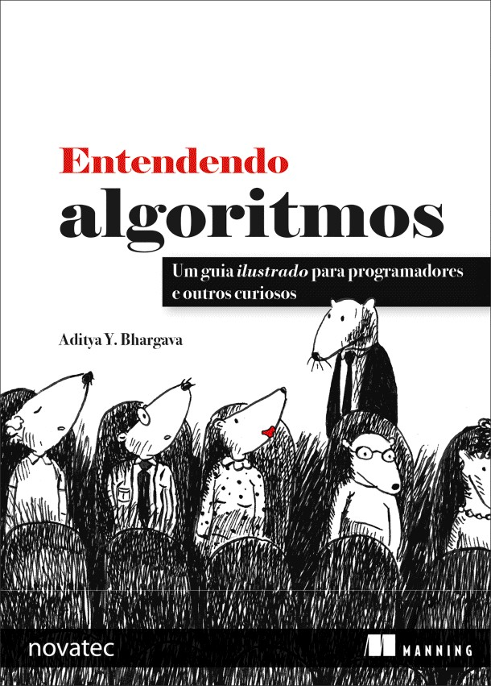
Aditya Y. Bhargava
Novatec
Original English language edition published by Manning Publications Co., Copyright © 2015 by Manning Publications. Portuguese-language edition for Brazil copyright © 2017 by Novatec Editora. All rights reserved.
Edição original em Inglês publicada pela Manning Publications Co., Copyright © 2015 pela Manning Publications. Edição em Português para o Brasil copyright © 2017 pela Novatec Editora.
Todos os direitos reservados.
© Novatec Editora Ltda. 2017.
Todos os direitos reservados e protegidos pela Lei 9.610 de 19/02/1998. É proibida a reprodução desta obra, mesmo parcial, por qualquer processo, sem prévia autorização, por escrito, do autor e da Editora.
Editor: Rubens Prates
Tradução: BrodTec
Revisão técnica: Nilo Menezes
Revisão gramatical: Marta Almeida de Sá
Assistente editorial: Priscila A. Yoshimatsu
Editoração eletrônica: Carolina Kuwabata
Histórico de edições impressas:
Abril/2017 Primeira edição
Novatec Editora Ltda.
Rua Luís Antônio dos Santos 110
02460-000 – São Paulo, SP – Brasil
Tel.: +55 11 2959-6529
Email: novatec@novatec.com.br
Site: www.novatec.com.br
Twitter: twitter.com/novateceditora
Facebook: facebook.com/novatec
LinkedIn: linkedin.com/in/novatec
Para os meus pais, Sangeeta e Yogesh
O que você aprenderá sobre desempenho
O que você aprenderá sobre a solução de problemas
Tempo de execução dos algoritmos cresce a taxas diferentes
Vendo diferentes tempos de execução Big O
A notação Big O estabelece o tempo de execução para a pior hipótese
Alguns exemplos comuns de tempo de execução Big O
Inserindo algo no meio da lista
A pilha de chamada com recursão
Usando tabelas hash para pesquisas
Utilizando tabelas hash como cache
Trabalhando com o algoritmo de Dijkstra
O problema do cronograma da sala de aula
O problema da cobertura de conjuntos
Caixeiro-viajante, passo a passo
Como faço para saber se um problema é NP-completo?
Perguntas frequentes sobre o problema da mochila
O que acontece se você adicionar um item?
O que acontece se você modi car a ordem das linhas?
É possível preencher a tabela a partir das colunas, em vez de a partir das
O que acontece se você adicionar um item menor?
Você consegue roubar frações de um item?
Otimizando o seu itinerário de viagem
Lidando com itens com interdependência
É possível que a solução requeira mais de dois subproblemas?
É possível que a melhor solução não utilize a capacidade total da mochila?
Maior subsequência comum – solução
Classi cando laranja versus toranjas
Criando um sistema de recomendações
Escolhendo boas características
Introdução ao aprendizado de máquina
Por que os algoritmos distribuídos são úteis?
Troca de chaves de Di e-Hel man
Prefácio
Comecei a programar como um hobby. O livro Visual Basic 6 for Dummies me ensinou o básico, e continuei a ler outros livros para aprender mais.
Porém o tema algoritmos era incompreensível para mim. Eu me lembro de ler os sumários dos meus primeiros livros de algoritmos e pensar
“ nalmente vou entender este assunto!”. No entanto, era um conteúdo muito denso, e desisti depois de algumas semanas. Foi quando tive o meu primeiro professor bom de algoritmos que eu percebi o quão simples e elegantes eles eram.
Alguns anos atrás, escrevi a minha primeira postagem ilustrada em um blog.
Eu aprendo melhor com imagens, e gostei muito do estilo ilustrado. Desde então, tenho feito algumas postagens ilustradas sobre programação funcional, Git, aprendizado de máquina e concorrência. A propósito, eu era um escritor medíocre quando comecei. Explicar conceitos técnicos é difícil.
Criar bons exemplos e descrever conceitos complicados são atividades que levam tempo. Sendo assim, é mais fácil passar por cima da parte complicada. Achava que estava fazendo um trabalho muito bom até que um dia, depois de uma de minhas postagens ter cado famosa, um colega de trabalho me disse “Eu li o seu texto e ainda não entendi isso”. Foi quando percebi que eu ainda tinha muito a aprender para me aprimorar.
Em algum momento enquanto escrevia essas postagens para o blog, a Manning entrou em contato comigo e perguntou se eu queria produzir um livro ilustrado. Bem, acontece que os editores da Manning sabem muito bem como explicar conceitos técnicos, e eles me ensinaram como ensinar. Escrevi este livro para sanar um problema pessoal: queria um livro que explicasse bem os conceitos técnicos difíceis, além de apresentar algoritmos fáceis de ser compreendidos. Melhorei muito a minha escrita desde aquela primeira postagem, e espero que você ache este livro de leitura fácil e informativa.
Agradeço à Manning por ter me dado a oportunidade de escrever este livro e por me proporcionar muita liberdade criativa. Agradeço aos meus editores Marjan Bace e Mike Stephens por me manterem na linha, ao Bert Bates por me ensinar a escrever e à Jennifer Sout por ser uma editora incrível, responsável e prestativa. Agradeço também a todo o time de produção da Manning: Kevin Sul ivan, Mary Piergies, Ti any Taylor, Leslie Haimes e aos outros nos bastidores. Além disso, quero dizer obrigado a todos os que leram o manuscrito e deram sugestões: Karen Bensdon, Rob Green, Michael Hamrah, Ozren Harlovic, Colin Hastie, Christopher Haupt, Chuck Henderson, Pawel Kozlowski, Amit Lamba, Jean-François Morin, Robert Morrison, Sankar Ramanathan, Sander Rossel, Doug Sparling e Damien White.
Obrigado a todos que me ajudaram a chegar até aqui: aos meus amigos da Flaskhit game board, por me ensinarem a programar, aos vários amigos que me ajudaram a revisar os capítulos, me dando conselhos e me permitindo testar diferentes formas de explicar um assunto, incluindo Ben Vinegar, Karl Puzon, Alex Manning, Esther Chan, Anish Bhatt, Michael Glass, Nikrad Mahdi, Charles Lee, Jared Friedman, Hema Manickavasagam, Hari Raja, Murali Gudipati, Srinivas Varadan e outros. Obrigado, Gerry Brady, por me ensinar algoritmos. Outro grande obrigado para as escolas de algoritmos como a CLRS, a Knuth e a Strang. Eu estou realmente em pé sobre os ombros dos gigantes.
Pai, mãe, Priyanka e o resto da família: obrigado pelo apoio constante. E
muito obrigado à minha esposa Maggie. Há muitas aventuras pela frente, e algumas delas não envolvem car em casa em uma sexta-feira à noite reescrevendo parágrafos.
Finalmente, um grande obrigado a todos os leitores que deram uma chance a este livro e aos leitores que me deram um feedback no fórum. Vocês realmente me ajudaram a tornar este livro melhor.
Este livro foi criado para ser de fácil leitura. Eu evito grandes uxos de pensamento. Toda vez que um conceito é introduzido, eu o explico de forma direta ou aviso quando vou explicá-lo. Os conceitos mais importantes são reforçados por meio de exercícios e diversas explanações para que você possa checar suas ideias e ter certeza de que está no caminho certo.
Eu ensino com exemplos. Em vez de escrever um monte de símbolos, meu objetivo é fazer com que você visualize os conceitos. Também acredito que aprendemos melhor quando conseguimos fazer uma relação com algo que já conhecemos, e com os exemplos ca mais fácil fazer essa relação. Logo, quando estiver tentando lembrar-se da diferença entre arrays e listas encadeadas (explicado no Capítulo 2), você poderá fazer isso sentado, vendo um lme. Além do mais, corro o risco de cair no óbvio, mas gosto de aprender com imagens. Este livro é cheio delas.
O conteúdo deste livro foi cuidadosamente escolhido. Não há necessidade de escrever um livro que aborda todos os tipos de algoritmos – para isso temos a Wikipédia e a Khan Academy. Todos os algoritmos que incluí neste livro são exequíveis. Eu os acho úteis no meu trabalho como um engenheiro de so ware e eles fornecem uma boa base para tópicos mais complexos. Boa leitura!
Roteiro
Os primeiros três capítulos deste livro constituem-se no seguinte:
• Capítulo 1 – Você aprenderá seu primeiro algoritmo prático: a pesquisa binária. Também aprenderá a analisar a velocidade de um algoritmo utilizando a notação Big O, que é utilizada durante todo o livro para avaliar o quão rápido ou lento um algoritmo é.
• Capítulo 2 – Você aprenderá duas estruturas de dados fundamentais: arrays e listas encadeadas. Essas estruturas são utilizadas no livro e também são usadas para criar estruturas de dados mais avançadas, como as tabelas hash (Capítulo 5).
• Capítulo 3 – Você aprenderá recursão, uma técnica útil usada em muitos algoritmos (como o quicksort, abordado no Capítulo 4).
Do meu ponto de vista, a notação Big O e a recursão são tópicos desa adores para iniciantes. Então decidi diminuir o ritmo e dedicar um tempo extra a estas seções.
O restante do livro apresenta algoritmos de aplicação mais ampla:
• Técnicas para resolução de problemas – Abordadas nos Capítulos 4, 8 e 9.
Se deparar com um problema e não tiver certeza sobre como resolvê-lo de maneira e ciente, tente a divisão e a conquista (Capítulo 4) ou a programação dinâmica (Capítulo 9). Ou você pode perceber que não existe uma solução e ciente e obter uma resposta aproximada utilizando o algoritmo guloso no lugar (Capítulo 8).
• Tabelas hash – Abordadas no Capítulo 5. Uma tabela hash é uma estrutura de dados muito útil. Ela contém conjuntos de chaves e valores associados, como o nome e o endereço de email de uma pessoa, ou um usuário associado a uma senha. É difícil descrever a utilidade das tabelas hash.
Quando quero resolver um problema, começo com dois planos de ataque:
“Posso usar tabela hash?” e “Posso modelar isso como um grafo?”.
• Algoritmos de grafos – Abordados nos Capítulos 6 e 7. Grafos são uma maneira de modelar uma rede: uma rede social, uma rede de estradas, uma rede de neurônios ou qualquer outro conjunto de conexões. A pesquisa em largura (Capítulo 6) e o algoritmo de Dijkstra (Capítulo 7) são maneiras de diminuir a distância entre dois pontos em uma rede. Você pode usar essa abordagem para calcular os graus de separação entre duas pessoas ou o caminho mais curto de um ponto a outro em uma rota.
• K-vizinhos mais próximos (KNN, K-nearest neighbors) – Abordado no Capítulo 7. Essa é uma técnica simples de aprendizado de máquina. Você pode usar a técnica KNN para criar recomendações de sistema, um mecanismo OCR ou um sistema para prever os valores da bolsa de valores
– na verdade, tudo que envolve prever um valor, por exemplo, “nós achamos que a crítica dará 4 estrelas para este lme”. Você pode utilizá-la, ainda, para classi car um objeto, por exemplo, “esta é a letra Q”.
• Próximos passos – O Capítulo 11 discorre sobre dez algoritmos que valem a pena para uma leitura posterior.
Como usar este livro
A ordem dos conteúdos deste livro foi cuidadosamente projetada. Se você tem interesse em um tópico especí co, sinta-se livre para pular para ele.
Caso contrário, leia os capítulos na ordem – eles se baseiam um no outro.
Recomendo fortemente que você execute os códigos dos exemplos. Não consigo reforçar isso o su ciente. Apenas redigite os códigos ou baixe-os em github.com/egonschiele/grokking_algorithms1 e os execute. Você reterá melhor o conteúdo se o zer.
Também recomendo que você faça os exercícios deste livro. Os exercícios são curtos – geralmente levam de um a dois minutos, algumas vezes de cinco a dez minutos. Eles o ajudarão a conferir o seu pensamento, assim você saberá se está fora da linha de pensamento antes de seguir adiante.
Quem deve ler este livro
Este livro é para qualquer um que queira entender o básico de programação e se familiarizar com algoritmos. Talvez você já tenha um problema de programação e esteja tentando descobrir a solução algorítmica. Ou talvez queira entender para que os algoritmos são úteis. Aqui está uma lista curta e incompleta de pessoas que provavelmente acharão este livro útil.
• programadores hobistas
• estudantes de cursos de programação
• graduados em ciências da computação que queiram refrescar a memória
• físicos/matemáticos/outros pro ssionais que tenham interesse em programação
Convenções de programação e downloads
Todos os exemplos deste livro utilizam o Python 2.7. Todos os códigos deste livro são apresentados em uma fonte monoespaçada como esta para se diferenciar do texto comum. Algumas anotações acompanham os códigos, destacando conceitos importantes.
Você pode baixar os códigos dos exemplos deste livro no site da editora em manning.com/books/grokking-algorithms ou em github.com/egonschiele/grokking_algorithms.
Acredito que você aprende melhor quando realmente gosta de aprender –
então divirta-se e execute os códigos!
Sobre o autor
Aditya Bhargava é um engenheiro de so ware na Etsy, um mercado online de produtos artesanais. Ele é formado em Ciências da Computação pela University of Chicago. Bhargava também é autor de um blog ilustrado de tecnologia em adit.io.
Como entrar em contato conosco
Envie seus comentários e suas dúvidas sobre este livro à editora escrevendo para: novatec@novatec.com.br.
Temos uma página web para este livro na qual incluímos erratas, exemplos e quaisquer outras informações adicionais.
• Página da edição em português:
https://novatec.com.br/livros/entendendo-algoritmos
• Página da edição original em inglês:
www.manning.com/books/grokking-algorithms
Para obter mais informações sobre os livros da Novatec, acesse nosso site: https://novatec.com.br.
1 O autor do livro disponibilizou no GitHub o código-fonte em várias linguagens de programação: C#, Python, Ruby, Java, Javascript e Swi , em seu formato original (em inglês). O código-fonte no livro foi traduzido para o português, assim como todas as imagens e ilustrações visando facilitar o entendimento pelo leitor.
1
Introdução a algoritmos
Neste capítulo
• Você terá acesso ao fundamental para compreender o restante do livro.
• Escreverá seu primeiro algoritmo de busca (pesquisa binária).
• Aprenderá como falar sobre o tempo de execução de um algoritmo (na notação Big O).
• Será apresentado a uma prática comum para projetar algoritmos (recursão).
Introdução
Um algoritmo é um conjunto de instruções que realizam uma tarefa. Cada trecho de código poderia ser chamado de um algoritmo, mas este livro trata dos trechos mais interessantes. Escolhi os algoritmos apresentados neste livro porque eles são rápidos ou porque resolvem problemas interessantes, ou por ambos os motivos. A seguir estão descritos alguns pontos importantes que serão demonstrados.
• O Capítulo 1 aborda pesquisa binária e mostra como um algoritmo pode acelerar o seu código. Em um dos exemplos, o número de etapas necessárias passa de 4 bilhões para 32 etapas!
• Um dispositivo de GPS utiliza algoritmos de grafos (que você aprenderá nos Capítulos 6, 7 e 8) para calcular a rota mais curta até o seu destino.
• Você pode usar a programação dinâmica (ver Capítulo 9) para escrever um algoritmo de IA (inteligência arti cial) que joga damas.
Em cada caso, descreverei o algoritmo e apresentarei um exemplo. Em seguida, falarei sobre o tempo de execução do algoritmo em notação Big O.
Por m, serão explorados os demais tipos de problemas que poderiam ser solucionados com o mesmo algoritmo.
O que você aprenderá sobre desempenho
Tenho uma boa notícia: uma implementação de cada algoritmo apresentado neste livro provavelmente estará disponível em sua linguagem favorita, portanto você não terá que escrever cada algoritmo! Porém essas implementações serão inúteis caso você não entenda o desempenho dos algoritmos. Neste livro, você aprenderá como comparar o desempenho de diferentes algoritmos: Você deve utilizar merge sort (ordenação por mistura) ou quicksort (ordenação rápida)? Você deve utilizar um array ou uma lista?
A escolha da estrutura de dados pode fazer uma grande diferença.
O que você aprenderá sobre a solução de problemas
Você aprenderá técnicas para resolução de problemas que poderiam estar fora da sua gama de habilidades até agora, como por exemplo:
• Se você gosta de criar jogos, poderá desenvolver um sistema de inteligência arti cial (IA) que segue o usuário utilizando algoritmos grá cos.
• Você aprenderá a criar um sistema de recomendações utilizando os K-vizinhos mais próximos.
• Alguns problemas não podem ser resolvidos em um tempo hábil! A parte deste livro que trata de problemas NP-completos demonstra como identi car estes problemas e como criar um algoritmo que forneça uma resposta aproximada.
Ao terminar de ler este livro, provavelmente, você conhecerá alguns dos algoritmos de maior aplicabilidade. Assim, poderá usar os seus conhecimentos para aprender sobre algoritmos mais especí cos para IA, bancos de dados etc. Além disso, poderá encarar grandes desa os em seu trabalho.
O que você precisa saber
Você deverá conhecer álgebra básica antes de iniciar a leitura deste livro. Em particular, partindo da função f( x) = x × 2, qual será o valor de f(5)? Se respondeu 10, você está pronto.
Além de tudo, este capítulo (e este livro) será compreendido mais facilmente se você conhecer alguma linguagem de programação. Todos os exemplos deste livro foram escritos em Python, assim, caso você não conheça nenhuma linguagem de programação e queira aprender uma, escolha Python, pois ela é ótima para iniciantes. Se você conhece alguma outra linguagem, como a Ruby, se sairá bem.
Pesquisa binária
Vamos supor que você esteja procurando o nome de uma pessoa em uma agenda telefônica (que frase antiquada!). O nome começa com K. Você pode começar na primeira página da agenda e ir folheando até chegar aos K s.
Porém você provavelmente vai começar pela metade, pois sabe que os K s estarão mais perto dali.
Ou suponha que esteja procurando uma palavra que começa com O em um dicionário. Novamente, você começa a busca pelo meio.
Agora, imagine que você entre no Facebook. Quando faz isso, o Facebook precisa veri car que você tem uma conta no site. Logo, ele procura seu nome de usuário em um banco de dados. Digamos que seu usuário seja karlmageddon. O Facebook poderia começar pelos A s e procurar seu nome
– mas faz mais sentido que ele comece a busca pelo meio.
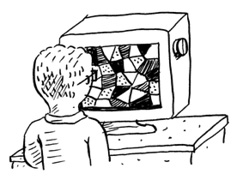
Isto é um problema de busca. E todos estes casos usam um algoritmo para resolvê-lo: pesquisa binária.
A pesquisa binária é um algoritmo. Sua entrada é uma lista ordenada de elementos (explicarei mais tarde por que motivo a lista precisa ser ordenada). Se o elemento que você está buscando está na lista, a pesquisa binária retorna a sua localização. Caso contrário, a pesquisa binária retorna None.
Por exemplo:
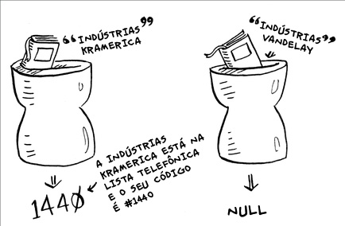
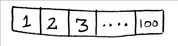
Procurando empresas em uma agenda com a pesquisa binária.
Eis um exemplo de como a pesquisa binária funciona. Estou pensando em um número entre 1 e 100.
Você deve procurar adivinhar o meu número com o menor número de tentativas possível. A cada tentativa, digo se você chutou muito para cima, muito para baixo ou corretamente.
Digamos que começou tentando assim: 1, 2, 3, 4… Veja como caria.
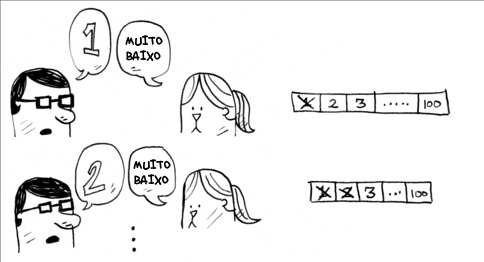
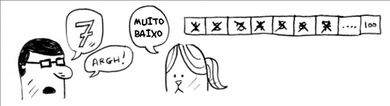
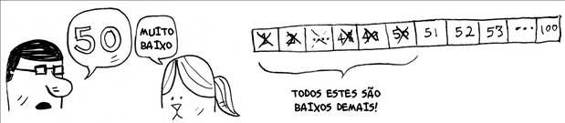
Uma tentativa ruim de acertar o número.
Isso se chama pesquisa simples (talvez pesquisa estúpida seja um termo melhor). A cada tentativa, você está eliminando apenas um número. Se o meu número fosse o 99, você precisaria de 99 chances para acertá-lo!
Uma maneira melhor de buscar
Aqui está uma técnica melhor. Comece com 50.
Muito baixo, mas você eliminou metade dos números! Agora, você sabe que os números de 1 a 50 são muito baixos. Próximo chute: 75.
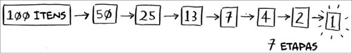
Muito alto, mas novamente você pode cortar metade dos números restantes!
Com a pesquisa binária, você chuta um número intermediário e elimina a metade dos números restantes a cada vez. O próximo número é o 63 (entre 50
e 75).
Isso é a pesquisa binária. Você acaba de aprender um algoritmo! Aqui está a quantidade de números que você pode eliminar a cada tentativa.
Elimine metade dos números a cada tentativa com a pesquisa binária.
Seja qual for o número que eu estiver pensando, você pode adivinhá-lo em um máximo de sete tentativas – porque a pesquisa binária elimina muitas possibilidades!
Suponha que você esteja procurando uma palavra em um dicionário. O
dicionário tem 240.000 palavras. Na pior das hipóteses, de quantas etapas você acha que a pesquisa precisaria?
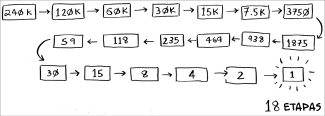
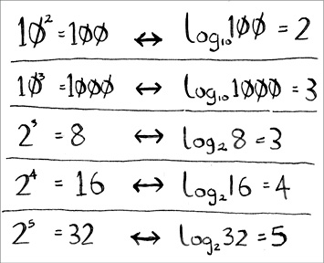
A pesquisa simples poderia levar 240.000 etapas se a palavra que você estivesse procurando fosse a última do dicionário. A cada etapa da pesquisa binária, você elimina o número de palavras pela metade até que só reste uma palavra.
Logo, a pesquisa binária levaria apenas 18 etapas – uma grande diferença!
De maneira geral, para uma lista de n números, a pesquisa binária precisa de log2 n para retornar o valor correto, enquanto a pesquisa simples precisa de n etapas.
Logaritmos
Você pode não se lembrar de logaritmos, mas provavelmente lembra-se de como calcular exponenciais. A expressão log10 100 basicamente diz: “Quantos 10s conseguimos multiplicar para chegar a 100?”. A resposta é 2: 10 × 10. Então, log10 100 = 2. Logaritmos são o oposto de exponenciais.
Logaritmos são o oposto de exponenciais.
Neste livro, quando falamos sobre a notação Big O (explicada daqui a pouco), levamos em conta que log sempre signi ca log2. Quando você procura um elemento usando a pesquisa
simples, no pior dos casos, terá de analisar elemento por elemento, passando por todos. Se for uma lista de oito elementos, precisaria checar no máximo oito números. Na pesquisa binária, precisa veri car log n elementos para o pior dos casos. Para uma lista de oito elementos, log 8
== 3, porque 23 == 8. Então, para uma lista de oito números, precisaria passar por, no máximo, três tentativas. Para uma lista de 1.024 elementos, log 1.024 == 10, porque 24 ==
1.024. Logo, para uma lista de 1.024 números, precisaria veri car no máximo dez deles.
Nota
Falarei muito sobre logaritmos neste livro. Portanto você deve entender o conceito. Se não entender, a Khan Academy ( khanacademy.org) tem um vídeo legal que esclarece muita coisa.
Nota
A pesquisa binária só funciona quando a sua lista está ordenada. Por exemplo, os nomes em uma agenda telefônica estão em ordem alfabética, então você pode utilizar a pesquisa binária para procurar um nome. O que aconteceria se a lista não estivesse ordenada?
Vamos ver como escrever a pesquisa binária em Python. O exemplo de código que utilizamos aqui usa arrays. Se não sabe como eles funcionam, não se preocupe; abordaremos isso no próximo capítulo. Você só precisa saber que pode armazenar uma sequência de elementos em uma linha de buckets consecutivos que se chama array. Os buckets são numerados a partir do 0: o primeiro bucket está na posição #0; o segundo, em #1; o terceiro, em
#2, e assim por diante.
A função pesquisa_binaria pega um array ordenado e um item. Se o item está no array, a função retorna a sua posição. Dessa maneira, você é capaz de saber por qual ponto do array deve continuar procurando. No começo, o código do array segue assim:
baixo = 0
alto = len(lista) - 1
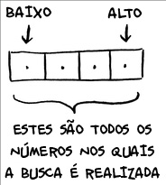
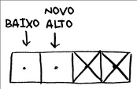
A cada tentativa, você testa para o elemento central.
meio = (baixo + alto) / 2 ❶
chute = lista[meio]
❶ meio será arredondado para baixo automaticamente pelo Python se (baixo +
alto) não for um número par.
Se o chute for muito baixo, você atualizará a variável baixo proporcionalmente:
if chute < item:
baixo = meio + 1
E se o chute for muito alto, você atualizará a variável alto. Aqui está o código completo:
def pesquisa_binaria(lista, item):
baixo = 0 ❶
alto = len(lista) - 1 ❶
while baixo <= alto: ❷
meio = (baixo + alto) / 2 ❸
chute = lista[meio]
if chute == item: ❹
return meio
if chute > item: ❺
else: ❻
baixo = meio + 1
return None ❼
minha_lista = [1, 3, 5, 7, 9] ❽
print pesquisa_binaria(minha_lista, 3) # => 1 ❾
print pesquisa_binaria(minha_lista, -1) # => None ❿
❶ baixo e alto acompanham a parte da lista que você está procurando.
❷ Enquanto ainda não conseguiu chegar a um único elemento. .
❸ … veri ca o elemento central.
❹ Acha o item.
❺ O chute foi muito alto.
❻ O chute foi muito baixo.
❼ O item não existe.
❽ Vamos testá-lo!
❾ Lembre-se, as listas começam no 0. O próximo endereço tem índice 1.
❿ “None” signi ca nulo em Python. Ele indica que o item não foi encontrado.
EXERCÍCIOS
1.1 Suponha que você tenha uma lista com 128 nomes e esteja fazendo uma pesquisa binária. Qual seria o número máximo de etapas que você levaria para encontrar o nome desejado?
1.2 Suponha que você duplique o tamanho da lista. Qual seria o número máximo de etapas agora?
Tempo de execução
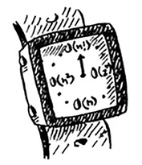
Sempre que falo sobre um algoritmo, falo sobre o seu tempo de execução.
Geralmente, você escolhe o algoritmo mais e ciente – caso esteja tentando otimizar tempo e espaço.
Voltando à pesquisa simples, quanto tempo se otimiza utilizando-a? Bem, a primeira abordagem seria veri car número por número. Se fosse uma lista de 100 números, precisaríamos de 100 tentativas. Se fosse uma lista de 4
bilhões de números, precisaríamos de 4 bilhões de tentativas. Logo, o número máximo de tentativas é igual ao tamanho da lista. Isso é chamado de tempo linear.
A pesquisa binária é diferente. Se a lista tem 100 itens, precisa-se de, no máximo, sete tentativas. Se tem 4 bilhões, precisa-se de, no máximo, 32
tentativas. Poderoso, não? A pesquisa binária é executada com tempo logarítmico. A tabela a seguir resume as nossas descobertas até agora.
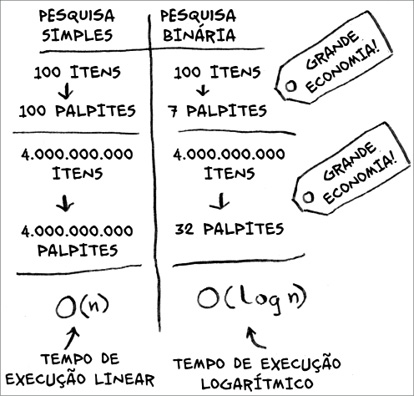
Tempo de execução para algoritmos de pesquisa.
Notação Big O
A notação Big O é uma notação especial que diz o quão rápido é um algoritmo. Mas quem liga para isso? Bem, acontece que você frequentemente utilizará o algoritmo que outra pessoa fez – e quando faz isso, é bom entender o quão rápido ou lento o algoritmo é. Nesta seção, explicarei como a notação Big O funciona e fornecerei uma lista com os tempos de execução mais comuns para os algoritmos.
Tempo de execução dos algoritmos cresce a taxas diferentes Bob está escrevendo um algoritmo para a NASA. O algoritmo dele entrará em ação quando o foguete estiver prestes a pousar na lua, e ele o ajudará a calcular o local de pouso.
Este é um exemplo de como o tempo de execução de dois algoritmos pode crescer a taxas diferentes. Bob está tentando decidir entre a pesquisa simples e a pesquisa binária. O algoritmo precisa ser tão rápido quanto correto. Por um lado, a pesquisa binária é mais rápida, o que é bom, pois Bob tem apenas 10 segundos para descobrir onde pousar, ou o foguete sairá de seu curso. Por outro lado, é mais fácil escrever a pesquisa simples, o que gera um risco menor de erros. Bob não quer mesmo erros no seu código! Para ser ainda mais cuidadoso, Bob decide cronometrar ambos os algoritmos com uma lista de 100 elementos.
Vamos presumir que leva-se 1 milissegundo para veri car um elemento.
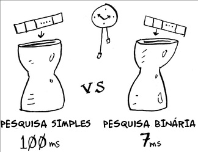
Com a pesquisa simples, Bob precisa veri car 100 elementos, então a busca leva 10 ms para rodar. Em contrapartida, ele precisa veri car apenas sete elementos na pesquisa binária (log2 100 é aproximadamente 7), logo, a pesquisa binária leva 7 ms para ser executada. Porém, realisticamente falando, a lista provavelmente terá em torno de 1 bilhão de elementos. Se a lista tiver esse número, quanto tempo a pesquisa simples levará para ser executada? E a pesquisa binária? Tenha certeza de que sabe a resposta para essa pergunta antes de continuar lendo.
Tempo de execução para pesquisa simples vs. pesquisa binária para
uma lista de 100 elementos.
Bob executa a pesquisa binária com 1 bilhão de elementos e leva 30 ms (log2
1.000.000.000 é aproximadamente 30). “30 ms!” – ele pensa. “A pesquisa binária é quase 15 vezes mais rápida do que a pesquisa simples, porque a pesquisa simples levou 100 ms para uma lista de 100 elementos e a pesquisa binária levou só 7 ms. Logo, a pesquisa simples levará 30 × 15 = 450 ms, certo? Bem abaixo do meu limite de 10 segundos.” Bob decide utilizar a pesquisa simples. Ele fez a escolha certa?
Não. Bob está errado. Muito errado. O tempo de execução para a pesquisa simples para 1 bilhão de itens é 1 bilhão ms, ou seja, 11 dias! O problema é que o tempo de execução da pesquisa simples e da pesquisa binária cresce com taxas diferentes.
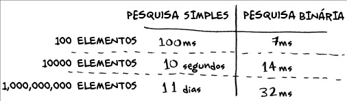
Tempos de execução crescem com velocidades diferentes!
Sendo assim, conforme o número de itens cresce, a pesquisa binária aumenta só um pouco o seu tempo de execução. Já a pesquisa simples leva muito tempo a mais. Logo, conforme a lista de números cresce, a pesquisa binária se torna muito mais rápida do que a pesquisa simples. Bob pensou que a pesquisa binária fosse 15 vezes mais rápida que a pesquisa simples, mas isso está incorreto. Se a lista tem 1 bilhão de itens, o tempo de execução é aproximadamente 33 milhões de vezes mais rápido. Por isso, não basta saber quanto tempo um algoritmo leva para ser executado – você precisa saber se o tempo de execução aumenta conforme a lista aumenta. É aí que a notação Big O entra.
A notação Big O informa o quão rápido é um algoritmo. Por exemplo, imagine que você tem uma lista de tamanho n. O tempo de execução na notação Big O é O( n). Onde estão os segundos? Eles não existem – a notação Big O não fornece o tempo em segundos. A notação Big O permite que você compare o número de operações. Ela informa o quão rapidamente um algoritmo cresce.
Temos outro exemplo disso. A pesquisa binária precisa de log n operações
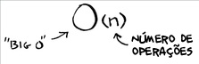
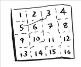
para veri car uma lista de tamanho n. Qual é o tempo de execução na notação Big O? É O(log n). De maneira geral, a notação Big O é escrita da seguinte forma:
O formato da notação Big O.
Isso fornece o número de operações que um algoritmo realiza. É chamado de notação Big O porque coloca-se um “grande O” na frente do número de operações (parece piada, mas é verdade!).
Agora, vamos ver alguns exemplos. Veja se consegue descobrir o tempo de execução para esses algoritmos.
Vendo diferentes tempos de execução Big O
Aqui segue um exemplo prático que você pode reproduzir em casa com um pedaço de papel e um lápis. Suponha que você tenha que desenhar uma grade com 16 divisões.
Qual é um bom algoritmo para desenhar essa grade?
Algoritmo 1
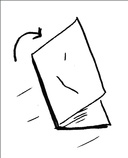
Uma forma de desenhar essa grade de 16 divisões é desenhar uma divisão de cada vez. Lembre-se, a notação Big O conta o número de operações. Nesse exemplo, desenhar uma divisão é uma operação. Você precisa desenhar 16
divisões. Quantas operações você terá de fazer se desenhar uma divisão por vez?
Desenhando a grade executando uma divisão por vez.
É necessário passar por 16 etapas para desenhar 16 divisões. Qual é o tempo de execução desse algoritmo?
Algoritmo 2
Tente agora este algoritmo. Dobre o papel.
Neste exemplo, dobrar o papel uma vez é uma operação. Você fez duas divisões com essa operação!
Dobre o papel de novo, de novo e de novo.
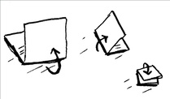
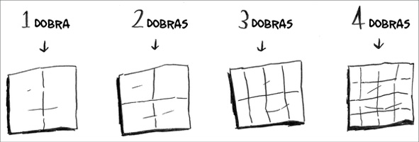
Desdobre depois de quatro dobras e você terá uma bela grade! A cada dobra, o número de divisões duplica. Você fez 16 divisões com quatro operações!
Desenhando uma grade com quatro dobras.
Você pode “desenhar” duas vezes mais divisões a cada dobra, logo, você pode desenhar 16 divisões em quatro etapas. Qual é o tempo de execução para esse algoritmo? Encontre o tempo de execução dos dois algoritmos antes de seguir adiante.
Respostas: O Algoritmo 1 tem tempo de execução O( n) e o algoritmo 2 tem tempo de execução O(log n).
A notação Big O estabelece o tempo de execução para a pior hipótese
Suponha que você utiliza uma pesquisa simples para procurar o nome de uma pessoa em uma agenda telefônica. Você sabe que a pesquisa simples tem tempo de execução O( n), o que signi ca que na pior das hipóteses terá veri cado cada nome da agenda telefônica. Nesse caso, você está procurando uma pessoa chamada Adit. Essa pessoa é a primeira de sua lista.
Logo, não teve de passar por todos os nomes – você a encontrou na primeira
tentativa. Esse algoritmo levou o tempo de execução O( n)? Ou levou O(1) porque encontrou o que queria na primeira tentativa?
A pesquisa simples ainda assim tem tempo de execução O( n). Nesse caso, você encontrou o que queria instantaneamente. Essa é a melhor das hipóteses. A notação Big O leva em conta a pior das hipóteses. Então pode-se dizer que, para o pior caso, você analisou cada item da lista. Esse é o tempo O( n). É uma garantia – você sabe, com certeza, que a pesquisa simples nunca terá tempo de execução mais lento do que O( n).
Nota
Além do tempo de execução para o pior dos casos, é importante analisar o tempo de execução para o “caso médio”. O pior caso e o caso médio serão discutidos no Capítulo 4.
Alguns exemplos comuns de tempo de execução Big O
Aqui temos cinco tempos de execução Big O que você encontrará bastante, ordenados do mais rápido para o mais lento.
• O(log n), também conhecido como tempo logarítmico. Exemplo: pesquisa binária.
• O( n), conhecido como tempo linear. Exemplo: pesquisa simples.
• O( n * log n). Exemplo: um algoritmo rápido de ordenação, como a ordenação quicksort (explicada no Capítulo 4).
• O( n 2). Exemplo: um algoritmo lento de ordenação, como a ordenação por seleção (explicada no Capítulo 2).
• O( n!). Exemplo: um algoritmo bastante lento, como o do caixeiro-viajante (explicado a seguir!).
Suponha que você esteja desenhando novamente a grade de 16 divisões e você possa escolher cinco algoritmos diferentes para fazer isso. Se escolher o primeiro algoritmo, levará um tempo de execução de O(log n) para desenhar a grade. Você pode fazer dez operações por segundo. Com o tempo de execução O(log n), você levará quatro operações para desenhar uma grade com 16 divisões (log 16 é 4). Logo, levará 0,4 segundos para desenhar a grade. E se tiver que desenhar 1.024 divisões? Levará 1.024 = 10
operações, ou um segundo para desenhar uma grade de 1.024 divisões. Estes números são para o primeiro algoritmo.
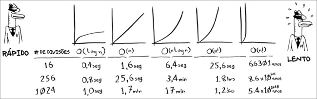
O segundo algoritmo é mais lento: ele tem tempo de execução O( n). Levará 16 operações para desenhar 16 divisões e levará 1.024 operações para desenhar 1.024 divisões. Quanto tempo isso leva em segundos?
Aqui está quanto tempo levaria para desenhar a grade com os algoritmos restantes, do mais rápido ao mais lento:
Existem outros tempos de execução, mas esses são os cinco mais comuns.
Isso é uma simpli cação. Na realidade, você não pode converter um tempo de execução na notação Big O para um número de operações, mas a aproximação é boa o su ciente por enquanto. Voltaremos a falar da notação Big O no Capítulo 4, depois de ter aprendido um pouco mais sobre algoritmos. Por enquanto, os principais pontos são os seguintes:
• A rapidez de um algoritmo não é medida em segundos, mas pelo crescimento do número de operações.
• Em vez disso, discutimos sobre o quão rapidamente o tempo de execução de um algoritmo aumenta conforme o número de elementos aumenta.
• O tempo de execução em algoritmos é expresso na notação Big O.
• O(log n) é mais rápido do que O( n), e O(log n) ca ainda mais rápido conforme a lista aumenta.
EXERCÍCIOS
Forneça o tempo de execução para cada um dos casos a seguir em termos da notação Big O.
1.3 Você tem um nome e deseja encontrar o número de telefone para esse nome em uma agenda telefônica.
1.4 Você tem um número de telefone e deseja encontrar o dono dele em uma
agenda telefônica. (Dica: Deve procurar pela agenda inteira!) 1.5 Você quer ler o número de cada pessoa da agenda telefônica.
1.6 Você quer ler os números apenas dos nomes que começam com A. (Isso é complicado! Esse algoritmo envolve conceitos que são abordados mais profundamente no Capítulo 4. Leia a resposta – você cará surpreso!) O caixeiro-viajante
Você pode ter lido a última seção e pensado: “De maneira alguma vou executar um algoritmo que tem tempo de execução O( n!).” Bem, deixe-me tentar provar o contrário! Aqui está um exemplo de um algoritmo com um tempo de execução muito ruim. Ele é um problema famoso da ciência da computação, pois seu crescimento é apavorante e algumas pessoas muito inteligentes acreditam que ele possa ser melhorado. Esse algoritmo é chamado de “o problema do caixeiro-viajante” .
Você tem um caixeiro-viajante.
O caixeiro precisa ir a cinco cidades.
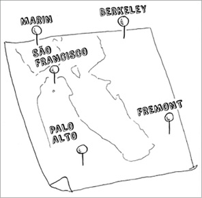
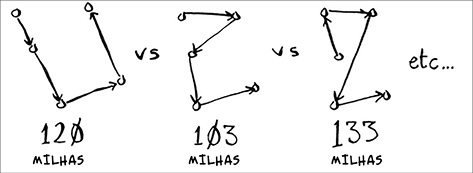
O caixeiro, o qual chamarei de Opus, quer passar por todas as cidades percorrendo uma distância mínima. Podemos enxergar o problema da seguinte forma: analisar cada ordem possível de cidades para visitar.
Ele soma a distância total e escolhe o caminho de menor distância. Existem 120 permutações para cinco cidades, logo, precisa-se de 120 operações para resolver o problema de cinco cidades. Para seis cidades, precisa-se de 720
operações (ou 720 permutações). Para sete cidades são necessárias 5.050
operações!
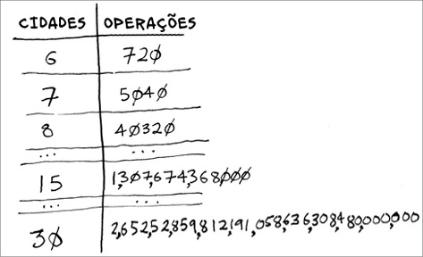
O número de operações aumenta drasticamente.
De maneira geral, para n itens, é necessário n! (fatorial de n) operações para chegar a um resultado. Então, este é o tempo de execução O( n!) ou o tempo fatorial. Esse algoritmo consome muitas operações, exceto para casos envolvendo números pequenos. No entanto, uma vez que lidamos com mais de 100 cidades, é impossível calcular a resposta em função do tempo – o sol entrará em colapso antes.
Esse é um algoritmo terrível! Opus deveria usar outro, não? Mas ele não pode. Esse é um problema sem solução. Não existe um algoritmo mais rápido para esse problema, e as pessoas mais inteligentes acreditam ser impossível melhorá-lo. O melhor que se pode fazer é chegar a uma solução aproximada. Veja o Capítulo 10 para saber mais sobre isso.
Uma observação nal: se você é um leitor avançado, leia sobre árvores binárias de busca. No capítulo seguinte, há uma breve descrição do assunto.
Recapitulando
• A pesquisa binária é muito mais rápida do que a pesquisa simples.
• O(log n) é mais rápido do que O( n), e O(log n) ca ainda mais rápido conforme os elementos da lista aumentam.
• A rapidez de um algoritmo não é medida em segundos.
• O tempo de execução de um algoritmo é medido por meio de seu crescimento.
• O tempo de execução dos algoritmos é expresso na notação Big O.
2
Ordenação por seleção
Neste capítulo
• Você conhecerá arrays e listas encadeadas – dois tipos de estrutura básica. Eles estão por todo lugar. Você já teve acesso aos arrays no capítulo 1 e continuará se utilizando deles por praticamente todos os capítulos. Arrays são fundamentais, então preste atenção! Porém algumas vezes é melhor usar a lista encadeada em vez do array. Este
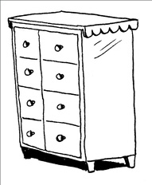
capítulo explana os prós e os contras de ambas as estruturas para que possa decidir qual é a ideal para o seu algoritmo.
• Você aprenderá a fazer o seu primeiro algoritmo de ordenação.
Muitos algoritmos só funcionam se os dados estiverem ordenados.
Lembra-se da pesquisa binária? Você só pode executá-la se os elementos de sua lista estiverem ordenados. Este capítulo lhe apresentará a ordenação por seleção. A maioria das linguagens de programação contém nativamente os algoritmos de seleção, então raramente terá de escrever a sua própria versão a partir do zero. No entanto a ordenação por seleção é um trampolim para o quicksort, que abordarei no próximo capítulo. O quicksort é um algoritmo importante e será compreendido mais facilmente se você já conhecer algum tipo de algoritmo de ordenação.
O que você precisa saber
Para entender a análise de desempenho deste capítulo, você precisa conhecer a notação Big O
e logaritmos. Se não conhece, sugiro que leia o Capítulo 1. A notação Big O é utilizada em todo este livro.
Como funciona a memória
Imagine que você vai a um show e precisa guardar as suas coisas na chapelaria. Algumas gavetas estão disponíveis.
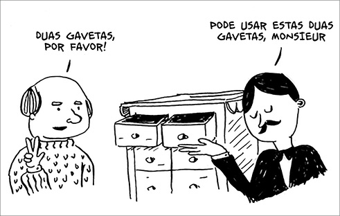
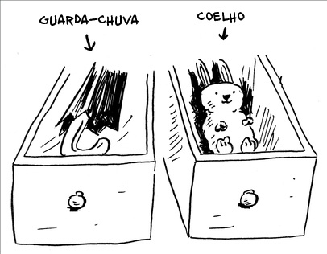
Cada gaveta pode guardar um elemento. Você deseja guardar duas coisas, então pede duas gavetas.
Você guardou as suas duas coisas aqui.
Você está pronto para o show! É mais ou menos assim que a memória do seu computador funciona. O computador se parece com um grande conjunto de gavetas, e cada gaveta tem seu endereço.
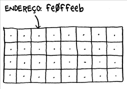
feØ eeb é o endereço de um slot na memória.
Cada vez que quer armazenar um item na memória, você pede ao computador um pouco de espaço e ele te dá um endereço no qual você pode armazenar o seu item. Se quiser armazenar múltiplos itens, existem duas maneiras para fazer isso: arrays e listas. Falarei sobre arrays e listas depois, bem como sobre os prós e contras de cada um. Não existe apenas uma maneira correta para armazenar itens em cada um dos casos, então é importante saber as diferenças.
Arrays e listas encadeadas
Algumas vezes, você precisa armazenar uma lista de elementos na memória.
Suponha que você esteja escrevendo um aplicativo para gerenciar os seus afazeres. É necessário armazenar os seus afazeres como uma lista na memória.
Você deve usar um array ou uma lista encadeada? Vamos armazenar os afazeres primeiro em um array, pois assim a compreensão ca mais fácil.
Usar um array signi ca que todas as suas tarefas estão armazenadas contiguamente (uma ao lado da outra) na memória.
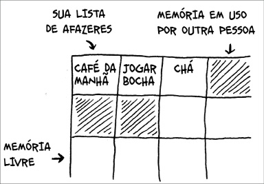
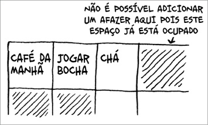
Agora, suponha que você queira adicionar mais uma tarefa. No entanto a próxima gaveta está ocupada por coisas de outra pessoa!
É como se você estivesse indo ao cinema com os seus amigos e encontrasse um lugar para sentar, mas outro amigo se juntasse a vocês e não houvesse lugar para ele. Vocês todos precisariam se mover e encontrar um lugar onde todos coubessem. Neste caso, você precisaria solicitar ao computador uma área de memória em que coubessem todas as suas tarefas. Então você as moveria para lá.
Se outro amigo aparecesse, vocês cariam sem lugar novamente – e todos precisariam se mover uma segunda vez! Que incômodo. Da mesma forma, adicionar novos itens a um array será muito lento. Uma maneira fácil de resolver isso é “reservando lugares”: mesmo que você tenha três itens na sua lista de tarefas, você pode solicitar ao computador dez espaços, só por via das dúvidas. Então, você pode adicionar dez itens a sua lista sem precisar mover nada. Isto é uma boa maneira de contornar o problema, mas você
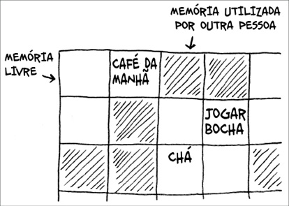
precisa car atento às desvantagens:
• Você pode não precisar dos espaços extras que reservou; então a memória será desperdiçada. Você não está utilizando a memória, mas ninguém mais pode usá-la também.
• Você pode precisar adicionar mais de dez itens a sua lista de tarefas, então você terá de mover seus itens de qualquer maneira.
Embora seja uma boa forma de contornar o problema, não é uma solução perfeita. Listas encadeadas resolvem este problema de adição de itens.
Listas encadeadas
Com as listas encadeadas, seus itens podem estar em qualquer lugar da memória.
Cada item armazena o endereço do próximo item da lista. Um monte de endereços aleatórios de memória estão ligados.
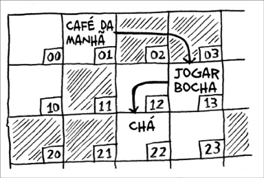
Endereços de memória ligados.
É como uma caça ao tesouro. Você vai ao primeiro endereço e ele diz “o próximo item pode ser encontrado no endereço 123”. Então vai ao endereço 123 e ele diz “O próximo item pode ser encontrado no endereço 847”, e assim por diante. Adicionar um item a uma lista encadeada é fácil: você o coloca em qualquer lugar da memória e armazena o endereço do item anterior.
Com as listas encadeadas você nunca precisa mover os seus itens; também evita outro problema. Digamos que você vá a um cinema famoso com os seus amigos. Vocês seis estão tentando procurar um lugar para sentar, mas o cinema está cheio. Não há seis lugares juntos. Bem, algumas vezes isso acontece com arrays. Imagine que está tentando encontrar 10.000 slots para um array. Sua memória tem 10.000 slots, mas eles não estão juntos. Você não consegue arrumar um lugar para o seu array! Usar uma lista encadeada seria como dizer “vamos nos dividir e assistir ao lme”. Se existir espaço na memória, você terá espaço para a sua lista encadeada.
Se as listas encadeadas são muito melhores para inserções, para que servem os arrays?
Arrays
Os websites que apresentam listas “top 10” usam uma tática trapaceira para conseguir mais visualizações. Em vez de mostrarem a lista em uma única página, eles colocam um item em cada página e fazem você clicar em
“próximo” para ler o item seguinte. Por exemplo, “Os 10 melhores vilões da TV” não estarão listados em uma única página, em vez disso, você começará pelo #10 (Newman) e seguirá clicando em “próximo” até chegar em #1
(Gustavo Fring). Esta técnica fornece aos sites dez páginas inteiras para incluir anúncios, mas ca chato car clicando em “próximo” nove vezes até chegar ao número 1. Seria muito melhor se a lista estivesse em uma única página e você pudesse clicar no nome de cada vilão para saber mais.
Listas encadeadas têm um problema similar. Suponha que você queira ler o último item de uma lista encadeada. Você não pode fazer isso porque não sabe o endereço dele. Em vez disso, precisa ir ao item #1 para pegar o endereço do item #2. Então, é necessário ir ao item #2 para encontrar o endereço do item #3, e assim por diante, até conseguir o endereço do último
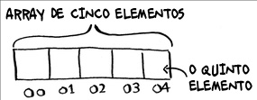
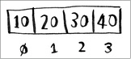
item. Listas encadeadas são ótimas se você quiser ler todos os itens, um de cada vez: você pode ler um item, seguir para o endereço do próximo item e fazer isso até o m da lista. Mas se você quiser pular de um item para outro, as listas encadeadas são terríveis.
Com arrays é diferente. Você sabe o endereço de cada item. Por exemplo, suponha que seu array tenha cinco itens e que você saiba que o primeiro está no endereço 00. Qual é o endereço do item #5?
A matemática lhe dá a resposta: está no endereço 04. Arrays são ótimos se você deseja ler elementos aleatórios, pois pode encontrar qualquer elemento instantaneamente em um array. Na lista encadeada, os elementos não estão próximos uns dos outros, então você não pode calcular instantaneamente a posição de um elemento na memória – precisa ir ao primeiro elemento para encontrar o endereço do segundo, então ir ao segundo elemento para encontrar o endereço do terceiro e seguir fazendo isso até chegar ao elemento que deseja.
Terminologia
Os elementos em um array são numerados. Essa numeração começa no 0, não no 1. Neste array, por exemplo, o número 20 está na posição 1.
O número 10 está na posição 0. Isso geralmente confunde novos programadores. Começar no 0 simpli ca todos os tipos de array na programação, logo, os programadores não podem fugir disso. Quase todas as linguagens de programação começarão os arrays numerando o primeiro elemento como 0. Logo você se acostuma!
A posição de um elemento é chamada de índice. Portanto, em vez de dizer “o
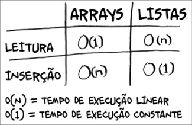

número 20 está na posição 1”, a terminologia correta seria dizer “o número 20 está no índice 1”. Usarei índice para falar de posição neste livro.
Aqui está o tempo de execução para operações comuns de arrays e listas.
Pergunta: Por que é necessário tempo de execução O( n) para inserir um elemento em um array? Suponha que você queira inserir um elemento no começo de um array. Como faria isso? Quanto tempo levaria? Encontre as respostas no nal desta seção!
EXERCÍCIOS
2.1 Suponha que você esteja criando um aplicativo para acompanhar as suas nanças.
Todos os dias você anotará tudo o que gastou e onde gastou. No nal do mês, você deverá revisar os seus gastos e resumir o quanto gastou. Logo, você terá um monte de inserções e poucas leituras. Você deverá usar um array ou uma lista para implementar este aplicativo?
Inserindo algo no meio da lista
Imagine que você queira que a sua lista de tarefas se pareça mais com um calendário. Antes, você adicionava os itens ao nal da lista. Agora, quer
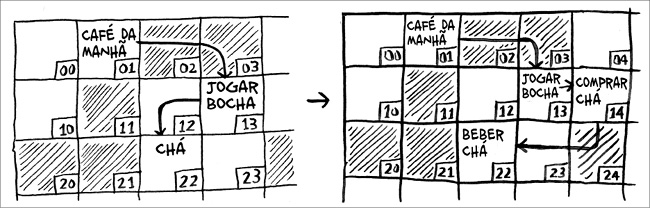
adicionar suas tarefas na ordem em que elas devem ser realizadas.
Lista desordenada.
O que seria melhor se você quisesse inserir elementos no meio de uma lista: arrays ou listas encadeadas? Usando listas encadeadas, basta mudar o endereço para o qual o elemento anterior está apontando.
Já para arrays, você deve mover todos os itens que estão abaixo do endereço de inserção.
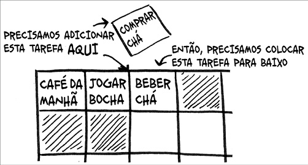
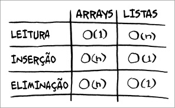
Se não houver espaço, pode ser necessário mover tudo para um novo local!
Por isso, listas encadeadas são melhores caso você queira inserir um elemento no meio de uma lista.
Deleções
E se você quiser deletar um elemento? Novamente, é mais fácil fazer isso usando listas encadeadas, pois é necessário mudar apenas o endereço para o qual o elemento anterior está apontando. Com arrays, tudo precisa ser movido quando um elemento é eliminado.
Ao contrário do que ocorre com as inserções, a eliminação de elementos sempre funcionará. A inserção poderá falhar quando não houver espaço su ciente na memória.
Aqui estão os tempos de execução para as operações mais comuns em arrays e listas encadeadas.
Vale a pena mencionar que inserções e eliminações terão tempo de execução O(1) somente se você puder acessar instantaneamente o elemento a ser
deletado. É uma prática comum acompanhar o primeiro e o último item de uma lista encadeada para que o tempo de execução para deletá-los seja O(1).
O que é mais usado: arrays ou listas? Obviamente, isso depende do caso em que se aplicam. Entretanto os arrays são mais comuns porque permitem acesso aleatório. Existem dois tipos de acesso: o aleatório e o sequencial. O
sequencial signi ca ler os elementos, um por um, começando pelo primeiro.
Listas encadeadas só podem lidar com acesso sequencial. Se você quiser ler o décimo elemento de uma lista encadeada, primeiro precisará ler os nove elementos anteriores para chegar ao endereço do décimo elemento. O
aleatório permite que você pule direto para o décimo elemento. Muitos casos requerem o acesso aleatório, o que faz os arrays serem mais utilizados.
Arrays e listas são usados para implementar outras estruturas de dados (isso será explicado mais adiante).
EXERCÍCIOS
2.2 Suponha que você esteja criando um aplicativo para anotar os pedidos dos clientes em um restaurante. Seu aplicativo precisa de uma lista de pedidos. Os garçons adicionam os pedidos a essa lista e os chefes retiram os pedidos da lista. Funciona como uma la. Os garçons colocam os pedidos no nal da la e os chefes retiram os pedidos do começo dela para cozinhá-los.
Você usaria um array ou uma lista encadeada para implementar essa lista?
(Dica: listas encadeadas são boas para inserções/eliminações e arrays são bons para acesso aleatório. O que fazer neste caso?) 2.3 Vamos analisar um experimento. Imagine que o Facebook guarda uma
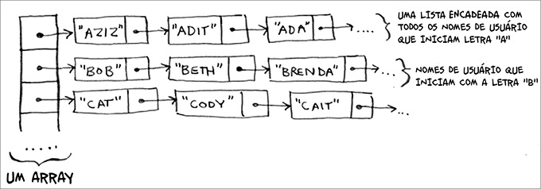
lista de usuários. Quando alguém tenta acessar o Facebook, uma busca é feita pelo nome de usuário. Se o nome da pessoa está na lista, ela pode continuar o acesso. As pessoas acessam o Facebook com muita frequência, então existem muitas buscas nessa lista. Presuma que o Facebook usa a pesquisa binária para procurar um nome na lista. A pesquisa binária requer acesso aleatório – você precisa ser capaz de acessar o meio da lista de nomes instantaneamente. Sabendo disso, você implementaria essa lista como um array ou uma lista encadeada?
2.4 As pessoas se inscrevem no Facebook com muita frequência também.
Suponha que você decida usar um array para armazenar a lista de usuários. Quais as desvantagens de um array em relação às inserções? Em particular, imagine que você está usando a pesquisa binária para buscar os logins. O que acontece quando você adiciona novos usuários em um array?
2.5 Na verdade, o Facebook não usa nem arrays nem listas encadeadas para armazenar informações. Vamos considerar uma estrutura de dados híbrida: um array de listas encadeadas. Você tem um array com 26 slots.
Cada slot aponta para uma lista encadeada. Por exemplo, o primeiro slot do array aponta para uma lista encadeada que contém os usuários que começam com a letra A. O segundo slot aponta para a lista encadeada que contém os usuários que começam com a letra B, e assim por diante.
Suponha que o Adit B se inscreva no Facebook e você queira adicioná-lo à lista. Você vai ao slot 1 do array, a seguir para a lista encadeada do slot 1, e adiciona Adit B no nal. Agora, suponha que você queira procurar o Zakhir H. Você vai ao slot 26, que aponta para a lista encadeada de todos
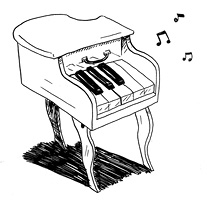
os nomes começados em Z. Então, procura pela lista até encontrar o Zakhir H.
Compare esta estrutura híbrida com arrays e listas encadeadas. É mais lento ou mais rápido fazer inserções e eliminações nesse caso? Você não precisa responder dando o tempo de execução Big(O), apenas diga se a nova estrutura de dados é mais rápida ou mais lenta do que os arrays e as listas encadeadas.
Ordenação por seleção
Vamos juntar tudo aprendido até aqui para você conhecer o seu segundo algoritmo: a ordenação por seleção. Para seguir nesta seção, você precisa ter compreendido arrays e listas, bem com a notação Big O.
Suponha que você tenha um monte de músicas no seu computador. Para cada artista, você tem um contador de plays.
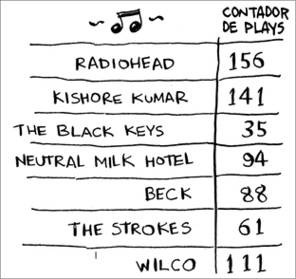
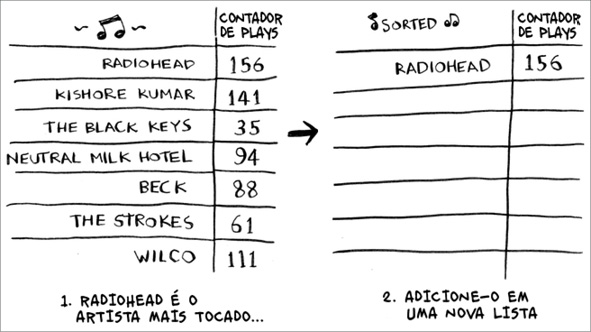
Você quer ordenar uma lista de artistas, do artista mais tocado para o menos tocado, para que possa categorizar os seus artistas favoritos. Como pode fazer isso? Uma maneira seria pegar o artista mais tocado da lista de músicas e adicioná-lo a uma nova lista.
Faça isso de novo para encontrar o próximo artista mais tocado.
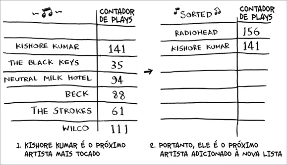
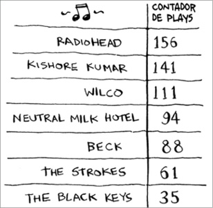
Continue fazendo isso e então você terminará com uma lista ordenada.
Vamos pensar como engenheiros da computação e avaliar quanto tempo isso demoraria a ser executado. Lembre-se de que o tempo de execução O( n) signi ca que você precisa passar por todos os elementos da lista uma vez.
Por exemplo, executar uma pesquisa simples na lista de artistas signi ca olhar para cada artista uma vez.
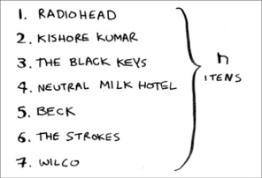
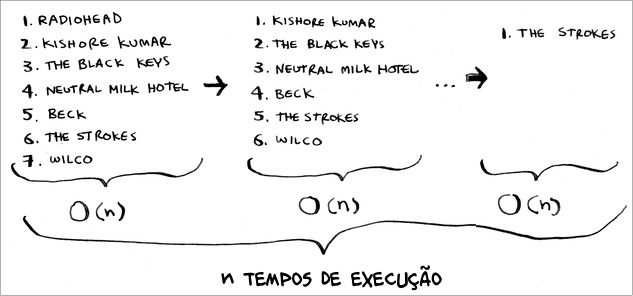
Para encontrar o artista com o maior número de plays você precisa veri car cada item da lista. Isso tem tempo de execução O( n), como você acabou de ver. Então você tem uma operação com tempo de execução O( n) e precisa repetir essa operação n vezes:
Isso tem tempo de execução O( n × n) ou O( n 2).
Algoritmos de ordenação são muito úteis. Agora você pode ordenar:
• nomes em uma agenda telefônica
• datas de viagem
• emails (do mais novo ao mais antigo)
Veri cando menos elementos a cada vez
Talvez você esteja pensando: conforme passa pelas operações, o número de elementos que precisa analisar diminui. Eventualmente, você acaba tendo de checar apenas um elemento.
Então como o tempo de execução permanece sendo O( n 2)? Isto é uma boa pergunta, e a resposta tem a ver com a notação Big O. Falarei mais sobre isso no capítulo 4, mas aqui vai o
Você estava certo sobre não precisar veri car n elementos a cada vez.
Você veri ca n elementos, então n – 1, n - 2 … 2, 1. Na média, você veri ca uma lista que tem ½ × n elementos. O tempo de execução é O( n × ½ × n). Mas constantes como ½ são ignoradas na notação Big O (novamente, leia o Capítulo 4 para ter acesso à discussão completa), então você escreve apenas O( n × n) ou O( n 2).
A ordenação por seleção é um algoritmo bom, mas não é muito rápido. O
Quicksort é um algoritmo de ordenação mais rápido, que tem tempo de execução de apenas O( n log n). Falarei dele no capítulo 4!
EXEMPLO DE CÓDIGO
Nós não lhe mostramos o código para ordenar a lista de músicas, mas a seguir estão alguns códigos que farão algo bem similar: ordenar um array do menor para o maior. Vamos escrever uma função para encontrar o menor elemento em um array:
def buscaMenor(arr):
menor = arr[0] ❶
menor_indice = 0 ❷
for i in range(1, len(arr)):
if arr[i] < menor:
menor = arr[i]
menor_indice = i
return menor_indice
❶ Armazena o menor valor.
❷ Armazena o índice do menor valor.
Agora, você pode usar esta função para escrever a ordenação por seleção: def ordenacaoporSelecao(arr): ❶
novoArr = []
for i in range(len(arr)):
menor = buscaMenor(arr) ❷
novoArr.append(arr.pop(menor))
return novoArr
print ordenacaoporSelecao([5, 3, 6, 2, 10])
❶ Ordenações em um array.
❷ Encontra o menor elemento do array e adiciona ao novo array.
Recapitulando
• A memória do seu computador é como um conjunto gigante de gavetas.
• Quando se quer armazenar múltiplos elementos, usa-se um array ou uma lista.
• No array, todos os elementos são armazenados um ao lado do outro.
• Na lista, os elementos estão espalhados e um elemento armazena o endereço do próximo elemento.
• Arrays permitem leituras rápidas.
• Listas encadeadas permitem rápidas inserções e eliminações.
• Todos os elementos de um array devem ser do mesmo tipo (todos ints, todos doubles, e assim por diante).
3
Recursão
Neste capítulo
• Você aprenderá recursão. A recursão é uma técnica de programação utilizada em muitos algoritmos. É um assunto importante para a compreensão dos capítulos seguintes.
• Você aprenderá como separar um problema em caso-base e caso recursivo. A estratégia dividir para conquistar (Capítulo 4) usa este
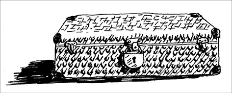
conceito simples para resolver problemas complicados.
Estou animado com este capítulo porque trata de recursão, uma maneira elegante de solucionar problemas. A recursão é um dos meus tópicos favoritos, mas ela é polêmica. As pessoas ou a amam ou a odeiam, ou elas a odeiam até que aprendam a amá-la alguns anos depois. Eu estava nessa terceira situação. Para facilitar as coisas, tenho um conselho:
• Este capítulo apresenta vários exemplos de códigos. Execute-os para ver como eles funcionam.
• Falarei sobre funções recursivas. Pelo menos uma vez, analise uma função recursiva com um papel e uma caneta, algo do tipo “vamos ver, passo o número 5 para a função fatorial, e então retorno cinco vezes passando o número 4 para fatorial, o que me dá…”, e assim por diante. Analisar uma função dessa forma lhe ajudará a entender como funcionam as funções recursivas.
Este capítulo inclui muitos pseudocódigos. Pseudocódigos são uma descrição de alto nível de um problema em formato de código. É escrito como um código, mas utiliza linguagem mais próxima da humana.
Recursão
Suponha que você esteja vasculhando o porão de sua avó e encontre uma misteriosa mala trancada.
A sua avó diz que a chave para a mala provavelmente está em uma caixa.
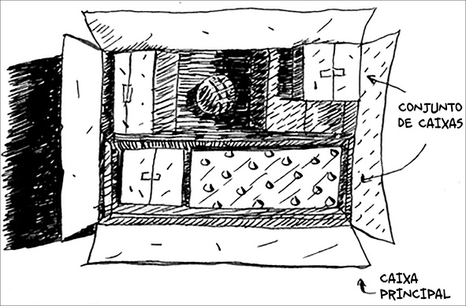
Esta caixa contém mais caixas com mais caixas dentro delas. A chave está em alguma destas caixas. Qual é o seu algoritmo para procurá-la? Pense nisso antes de continuar a leitura.
Aqui está uma abordagem.
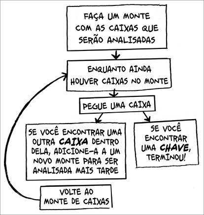

1. Monte uma pilha com as caixas que serão analisadas.
2. Pegue uma caixa e olhe o que tem dentro dela.
3. Se você encontrar outra caixa dentro dela, adicione-a a um novo monte para ser veri cada mais tarde.
4. Se você encontrar uma chave, terminou!
5. Repita.
Aqui está outra abordagem.
1. Olhe o que tem dentro da caixa.
2. Se encontrar outra caixa, volte ao passo 1.
3. Se encontrar a chave, terminou!
Qual abordagem lhe parece mais fácil? A primeira abordagem utiliza um loop while (enquanto, em português). Enquanto o monte existir, pegue uma caixa e olhe o que tem dentro dela:
def procure_pela_chave(caixa_principal):
pilha = main_box.crie_uma_pilha_para_busca()
while pilha is not vazia:
caixa = pilha.pegue_caixa()
for item in caixa:
if item.e_uma_caixa():
pilha.append(item)
elif item.e_uma_chave():
print "achei a chave!"
A segunda maneira utiliza a recursão. Recursão é quando uma função chama a si mesma. Veja o pseudocódigo de como isso funciona.
def procure_pela_chave(caixa):
for item in caixa:
if item.e_uma_caixa():
procure_pela_chave(item) ❶
elif item.e_uma_chave():
print "achei a chave!"
❶ Recursão!
Ambas as abordagens cumprem com a mesma proposta, mas a segunda me parece mais objetiva. A recursão é usada para tornar a resposta mais clara.
Não há nenhum benefício quanto ao desempenho ao utilizar a recursão. Na verdade, os loops algumas vezes são melhor para o desempenho de um programa. Gosto desta frase de Leigh Caldwel , do Stack Over ow: “Os loops podem melhorar o desempenho do seu programa. A recursão melhora o desempenho do seu programador. Escolha o que for mais importante para a sua situação.” 1
Muitos algoritmos importantes usam a recursão, então é fundamental entender este conceito.
Caso-base e caso recursivo
Devido ao fato de a função recursiva chamar a si mesma, é mais fácil escrevê-la erroneamente e acabar em um loop in nito. Por exemplo, suponha que você escreva uma função que imprima uma contagem regressiva, como esta:
> 3...2...1
Você pode escrever isso de maneira recursiva fazendo o seguinte: def regressiva(i):
print i
regressiva(i-1)
Escreva este código e execute-o. Você perceberá um problema: essa função cará executando para sempre!
Loop infinito.
> 3...2...1...0...-1...-2...
(Pressione Ctrl-C para interromper o seu script.)
Quando você escreve uma função recursiva, deve informar quando a recursão deve parar. É por isso que toda função recursiva tem duas partes: o caso-base e o caso recursivo. O caso recursivo é quando a função chama a si mesma. O caso-base é quando a função não chama a si mesma novamente, de forma que o programa não se torna um loop in nito.
Vamos adicionar o caso-base à função de contagem regressiva: def regressiva(i):
print i
if i <= 1: ❶
return
else: ❷
regressiva(i-1)
❶ Caso-base.
❷ Caso recursivo.
Agora, a função funciona como esperado. Ela ca mais ou menos assim: A pilha
Esta seção aborda a pilha de chamada (cal stack). Isto é um conceito importante em programação e indispensável para entender a recursão.
Suponha que você esteja fazendo um churrasco para os seus amigos. Você tem uma lista de afazeres em forma de uma pilha de notas adesivas.
Você se lembra de que, quando falamos de arrays e listas, também havia uma lista de afazeres? Podia adicionar itens em qualquer lugar da lista ou remover itens aleatórios. A pilha de notas adesivas é bem mais simples.
Quando você insere um item, ele é colocado no topo da pilha. Quando você lê um item, lê apenas o item do topo da pilha e ele é retirado da lista. Logo, sua lista de afazeres contém apenas duas ações: push (inserir) e pop (remover e ler).
Vamos ver como isso funciona na prática.
Esta estrutura de dados é chamada de pilha. A pilha é uma estrutura de dados simples. Você a tem usado esse tempo todo sem perceber!
A pilha de chamada
Seu computador usa uma pilha interna denominada pilha de chamada.
Vamos ver isto na prática. Aqui está um exemplo simples: def sauda(nome):
print "Olá, " + nome + "!"
sauda2(nome)
print "preparando para dizer tchau..."
tchau()
Esta função te cumprimenta e chama outras duas funções: def sauda2(nome):
print "Como vai " + nome + "?"
def tchau():
print "ok, tchau!"
Vamos analisar o que acontece quando você chama uma função.
Nota
print é uma função em Python, mas, para facilitar as coisas, vamos ngir que não é. Entre na brincadeira.
N.R.T.: tecnicamente print não é uma função em Python 2, mas uma instrução ou statement.
Suponha que você chame sauda("maggie"). Primeiro, seu computador aloca uma caixa de memória para essa chamada.
Agora, vamos usar a memória. A variável nome é setada para “maggie”. Isso precisa ser salvo.
Cada vez que você faz uma chamada de função, seu computador salva na memória os valores para todas as variáveis. Depois disso, imprime olá, maggie!. Então, chama sauda2("maggie").
Novamente, seu computador aloca uma caixa de memória para essa chamada de função.
Seu computador está usando uma pilha para estas caixas. A segunda caixa é adicionada em cima da primeira. Você imprime "como vai maggie?".
Então, retorna da chamada de função. Quando isso acontece, a caixa do topo da pilha é retirada.
Agora, a caixa do topo da pilha aloca os valores da função sauda, o que signi ca que você retornou à função sauda. Quando você chamou a função sauda2, a função sauda cou parcialmente completa. Esta é a grande ideia por trás desta seção: quando você chama uma função a partir de outra, a chamada de função ca pausada em um estado parcialmente completo. Todos os valores das variáveis para aquela função ainda estão armazenados na memória. Agora que você já utilizou a função sauda2, você está de volta na função sauda e pode continuar de onde parou. Primeiro, imprime
"preparando para dizer tchau..." e então chama a função tchau.
Uma caixa para esta função é adicionada ao topo da pilha. Quando você imprimir ok, tchau!, retornará da chamada de função.
Agora, você está de volta à função sauda. Não há nada mais a ser feito, e você pode sair da função sauda também. Essa pilha usada para guardar as variáveis de múltiplas funções é denominada pilha de chamada.
EXERCÍCIOS
3.1 Suponha que eu forneça uma pilha de chamada como esta: Quais informações você pode retirar baseando-se apenas nesta pilha de chamada?
Agora, vamos ver esta pilha de chamada sendo executada com uma função recursiva.
A pilha de chamada com recursão
As funções recursivas também utilizam a pilha de chamada! Vamos analisar isto na prática com a função fat (fatorial). fat(5) é escrita como 5! e é de nida da seguinte forma: 5! = 5 * 4 * 3 * 2 * 1. De forma semelhante, fat(3) é 3 * 2 * 1. Aqui está uma função recursiva para calcular a fatorial de um número:
def fat(x):
if x == 1:
return 1
else:
return x * fat(x-1)
Agora, você chama a função fat(3). Vamos analisar esta pilha de chamada linha por linha e ver como ela se altera. Lembre-se, a caixa mais próxima ao topo lhe diz em qual chamada a função fat se encontra atualmente.
Repare que cada chamada para a função fat tem seu próprio valor de x.
Você não consegue acessar a mesma função com outro valor de x.
A pilha tem um papel importante na recursão. No primeiro exemplo, mostrei duas abordagens para encontrar a chave. Aqui está a primeira.
Desta forma, você fez um monte com caixas para analisar, então sabe quais caixas você ainda precisa abrir.
Mas na abordagem recursiva não existem montes.
Se não existem montes, como um algoritmo reconhece quais caixas ele deve procurar? Aqui está um exemplo.
Neste ponto, a pilha de chamada se parece com isto: O “monte de caixas” é salvo na pilha! Esta é uma pilha com as funções de chamada completadas até a metade, cada uma com a sua lista de caixas, também completadas até a metade, para ser analisadas. Utilizar a pilha é conveniente porque você não precisa acompanhar o monte de caixas – a pilha faz isso para você. Usar a pilha é bom, porém, existe um custo: salvar toda essa informação pode ocupar muita memória. Cada uma destas funções de chamada ocupa um pouco de memória, e quando a sua pilha está
muito cheia é sinal de que seu computador está salvando informação para muitas chamadas de funções. Para esta situação, você tem duas opções:
• Reescrever seu código utilizando loops.
• Utilizar o que chamamos de tail recursion ( recursão de cauda). Isto é um tópico avançado em recursão e está fora do escopo deste livro. Esta técnica também não é suportada por todas as linguagens de programação.
EXERCÍCIO
3.2 Suponha que você acidentalmente escreva uma função recursiva que que executando in nitamente. Como você viu, seu computador aloca memória na pilha para cada chamada de função. O que acontece com a pilha quando a função recursiva ca executando in nitamente?
Recapitulando
• Recursão é quando uma função chama a si mesma.
• Toda função recursiva tem dois casos: o caso-base e o caso recursivo.
• Uma pilha tem duas operações: push e pop.
• Todas as chamadas de função vão para a pilha de chamada.
• A pilha de chamada pode car muito grande e ocupar muita memória.
1 http://stackover ow.com/a/72694/139117.
4
Quicksort
Neste capítulo
• Você irá se deparar, ocasionalmente, com problemas que não podem ser resolvidos com algum algoritmo de seu conhecimento.
Porém quando um bom desenvolvedor de algoritmos encontra um destes problemas, ele não desiste. Pelo contrário, ele utiliza uma ampla gama de técnicas para encontrar uma solução, sendo a
técnica de dividir para conquistar a primeira que você aprenderá.
• Você conhecerá também o quicksort, um algoritmo de ordenação elegante que é utilizado com frequência. Este algoritmo utiliza a técnica de dividir para conquistar.
No último capítulo você aprendeu tudo sobre recursão. Este capítulo focará na utilização destas suas novas habilidades aplicadas na resolução de problemas. Para isto, vamos explorar a técnica dividir para conquistar (DC), uma técnica recursiva muito conhecida para resolução de problemas.
Este capítulo trata do ponto principal dos algoritmos, pois um algoritmo que consegue resolver apenas um tipo de problema não é muito útil. Assim, a técnica DC oferece uma nova maneira de pensar sobre a resolução de problemas, tornando-se mais uma alternativa em sua caixa de ferramentas.
Quando você se deparar com um problema novo, não terá motivos para car desnorteado. Em vez disso, poderá se perguntar “Será que posso resolver este problema usando a técnica de dividir para conquistar?”.
Ao nal deste capítulo você terá aprendido o seu primeiro algoritmo que utiliza a técnica DC: o quicksort. O algoritmo quicksort é um algoritmo de ordenação muito mais rápido do que o algoritmo de ordenação por seleção (que você aprendeu no Capítulo 2), e é também um bom exemplo de programação elegante.
Dividir para conquistar
A técnica DC pode levar algum tempo para ser compreendida. Por isso, veremos três exemplos. Primeiro, mostrarei um exemplo visual. Depois, mostrarei um código de exemplo simples, mas não tão elegante. Por m, nos aprofundaremos no quicksort, um algoritmo de ordenação que utiliza DC.
Suponha que você seja um fazendeiro que tenha uma área de terra.
Você quer dividir sua fazenda em porções quadradas iguais, sendo que estas porções devem ter o maior tamanho possível. Assim, nenhuma destas alternativas funcionará.
Como encontrará o maior tamanho possível para estes quadrados? Usando a estratégia DC! Os algoritmos DC são recursivos. Assim, para resolver um problema utilizando DC, você deve seguir dois passos: 1. Descubra o caso-base, que deve ser o caso mais simples possível.
2. Divida ou diminua o seu problema até que ele se torne o caso-base.
Vamos usar DC para encontrar a solução deste problema. Qual é a maior largura que você pode usar?
Primeiro, descubra o caso-base. Seria mais fácil solucionar este problema se um dos lados fosse múltiplo do outro.
Suponha que um dos lados tenha 25 metros (m) e o outro tenha 50. Assim, o maior quadrado que você pode ter mede 25 m x 25 m. Você precisa de dois destes quadrados para dividir a porção de terra.
Agora você precisa descobrir o caso recursivo, e é aqui que a estratégia DC
entra em ação. Seguindo a estratégia DC, a cada recursão você deve reduzir o seu problema. Então, como reduzir este problema? Vamos começar identi cando os maiores quadrados que você pode utilizar.
Você pode posicionar dois quadrados de 640 × 640 na fazenda e ainda continuará com uma porção de terra para ser dividida. Este é o momento
“Aha!”. Você ainda tem um segmento da fazenda que deve ser dividido. Por que não aplica este mesmo algoritmo neste segmento?
Você iniciou com uma porção de terra medindo 1.680 × 640 que deveria ser dividida. Porém agora você precisa dividir um segmento menor, que mede 640 × 400. Caso encontre o maior quadrado que divide este segmento, ele será o maior quadrado que dividirá toda a fazenda. Você acabou de reduzir um problema de divisão de uma fazenda medindo 1.680 × 640 para um problema de divisão de uma área medindo 640 × 400!
Algoritmo de Euclides
“Caso você encontre o maior quadrado que divide este segmento, ele será o maior quadrado que irá dividir toda a fazenda.” Se não parece óbvio o motivo de esta a rmação ser verdadeira, não se preocupe, ela realmente não é trivial. Infelizmente, a prova desta a rmação é um pouco longa para ser incluída neste livro, então você terá de con ar em mim. Caso você queira entender a prova, procure o Algoritmo de Euclides. A Khan Academy deu uma boa explicação,
disponível
aqui:
https://www.khanacademy.org/computing/computer-science/cryptography/modarithmetic/a/the-euclidean-algorithm.
Vamos aplicar o mesmo algoritmo novamente. Começando com uma fazenda medindo 640 × 400 m, o maior quadrado que você pode ter mede 400 × 400 m.
E isso deixa você com um segmento menor do que 400 × 240 m.
Você pode desenhar um quadrado neste segmento que lhe deixa com um segmento ainda menor, de 240 × 160 m.
Então, você desenha um quadrado neste segmento para ter um segmento ainda menor.
Ei, você acabou de descobrir o caso-base, pois 80 é um múltiplo de 160. Se dividir este segmento em quadrados, não haverá segmentos sobrando!
Assim, para a fazenda original, o maior quadrado que você pode utilizar é 80 × 80 m.
Para recapitular, estes são os passos para aplicação da estratégia DC: 1. Descubra o caso-base, que deve ser o caso mais simples possível.
2. Descubra como reduzir o seu problema para que ele se torne o caso-base.
O algoritmo DC não é um simples algoritmo que você aplica em um problema, mas sim uma maneira de pensar sobre o problema. Vamos ver mais um exemplo.
Você tem um array de números.
Você deve somar todos os números e retornar o valor total. Isto é simples de ser feito com um loop:
def soma(lista):
total = 0
for x in lista:
total += x
return total
print soma([1, 2, 3, 4])
Mas como isso poderia ser feito com uma função recursiva?
Passo 1: Descubra o caso-base. Qual é o array mais simples que você pode obter? Pense sobre o caso mais simples: se você tiver um array com 0 ou com 1 elemento, será muito simples calcular a soma.
Logo, esse é o caso-base.
Passo 2: Você deve chegar mais perto de um array vazio a cada recursão.
Como pode reduzir o tamanho do seu problema? Esta é uma alternativa: A soma deste array é igual a isto:
Em ambos os casos o resultado é 12. Porém, na segunda versão, você está usando um array menor na função soma. Ou seja, você está diminuindo o tamanho do problema!
A sua função soma poderia funcionar assim:
Aqui está um exemplo da função na prática:
Lembre-se de que a recursão tem memória dos estados anteriores.
Dica
Quando estiver escrevendo uma função de recursão que envolva um array, o
caso-base será, muitas vezes, um array vazio ou um array com apenas um elemento. Se estiver com problemas, use este caso como base.
Uma espiada em programação funcional
“Por que eu faria isto recursivamente quando é mais simples fazer através de um loop?” é o que você pode estar pensando. Bem, estamos dando uma espiada em programação funcional!
Linguagens de programação funcional, como Haskel , não contêm loops, e isso faz com que você tenha de usar funções como essa. Se você compreende bem o que é recursão, linguagens funcionais serão simples de entender. Por exemplo, você escreveria uma função somatória em Haskel assim:
soma [] = 0 ❶
soma (x:xs) = x + (soma xs) ❷
❶ Caso-base.
❷ Caso recursivo.
Perceba que parece que você tem duas de nições para a função. A primeira de nição é executada quando você alcança o caso-base, e a segunda é executada no caso recursivo. Você também pode escrever essa função em Haskel usando um operador condicional if (se, em português):
soma arr = if arr == []
then 0
else (head arr) + (soma (tail arr))
Porém a primeira de nição é mais simples de ler. Como Haskel se baseia fortemente em recursão, essa linguagem inclui vários detalhes como este para tornar a recursão mais simples. Se você gosta de recursão ou caso você esteja interessado em aprender uma nova linguagem de programação, dê uma olhada em Haskel .
EXERCÍCIOS
4.1 Escreva o código para a função soma, vista anteriormente.
4.2 Escreva uma função recursiva que conte o número de itens em uma lista.
4.3 Encontre o valor mais alto em uma lista.
4.4 Você se lembra da pesquisa binária do Capítulo 1? Ela também é um algoritmo do tipo dividir para conquistar. Você consegue determinar o caso-base e o caso recursivo para a pesquisa binária?
Quicksort
O quicksort é um algoritmo de ordenação. Este algoritmo é muito mais rápido do que a ordenação por seleção e é muito utilizado na prática. Por exemplo, a biblioteca-padrão da linguagem C tem uma função chamada qsort, que é uma implementação do quicksort. O algoritmo quicksort também utiliza a estratégia DC.
Vamos usar o quicksort para ordenar um array. Qual é o array mais simples que um algoritmo de ordenação pode ordenar (lembre-se da minha dica na seção anterior)? Bem, alguns arrays não precisam nem ser ordenados.
Arrays vazios ou arrays com apenas um elemento serão o caso-base. Você pode apenas retornar esses arrays como eles estão, visto que não há nada para ordenar:
def quicksort(array):
if len(array) < 2:
return array
Vamos dar uma olhada em arrays maiores. Um array com dois elementos também é muito simples de ordenar.
E um array com três elementos?
Lembre-se, você está usando DC. Sendo assim, quer quebrar este array até que você chegue ao caso-base. Portanto o funcionamento do quicksort segue esta lógica: primeiro, escolha um elemento do array. Esse elemento será chamado de pivô.
Falaremos sobre como escolher um bom pivô mais tarde. Neste momento, vamos utilizar o primeiro item do array como pivô.
Assim, encontre os elementos que são menores do que o pivô e também os elementos que são maiores.
Isso é chamado de particionamento. Desse modo, você tem:
• Um subarray contendo todos os números menores do que o pivô
• O pivô
• Um subarray contendo todos os números maiores do que o pivô Os dois subarrays não estão ordenados, apenas particionados. Porém, se eles estivessem ordenados, a ordenação do array contendo todos os elementos seria simples.
Caso os subarrays estejam ordenados, poderá combiná-los desta forma: array esquerdo + pivô + array direito. Consequentemente, terá um array ordenado. Neste caso, temos [10, 15] + [33] + [] = [10, 15, 33], que é um array ordenado.
Como você pode ordenar os subarrays? Bem, o caso-base do quicksort consegue ordenar arrays de dois elementos (o subarray esquerdo) e também arrays vazios (o subarray direito). Assim, se utilizar o quicksort em ambos os subarrays e então combinar os resultados, terá um array ordenado!
quicksort([15, 10]) + [33] + quicksort([])
> [10, 15, 33] ❶
❶ Um array ordenado
Isto funcionará com qualquer pivô. Suponha que você tenha escolhido o número 15 como pivô.
Ambos os subarrays contêm apenas um elemento, e você já sabe como ordenar este tipo de array. Logo, já sabe como ordenar um array de três elementos. Estes são os passos:
1. Escolha um pivô.
2. Particione o array em dois subarrays, separando-os entre elementos menores do que o pivô e elementos maiores do que o pivô.
3. Execute o quicksort recursivamente em ambos os subarrays.
E quanto a um array de quatro elementos?
Suponha que, desta vez, você escolheu o número 33 como pivô.
O array da esquerda contém três elementos, e você já sabe como ordenar arrays de três elementos: executando o quicksort recursivamente.
Agora pode ordenar arrays de quatro elementos. Sabendo ordenar arrays com quatro elementos, você consegue ordenar arrays com cinco elementos.
Como? Suponha que tenha um array com cinco elementos.
Estas são todas as maneiras pelas quais você pode particionar este array, dependendo do pivô que escolher.
Perceba que todos estes subarrays têm entre 0 a 4 elementos, e você já sabe como ordenar arrays de 0 a 4 elementos usando o quicksort! Logo, não importa o pivô que você escolher, pois você poderá executar o quicksort recursivamente em ambos os subarrays.
Por exemplo, imagine que você escolheu o número 3 como pivô. Você executa o quicksort nos subarrays.
Os subarrays são ordenados e então você os combina, obtendo um array ordenado. Isto funcionará mesmo que escolha o número 5 como pivô.
Isso funcionará, na verdade, com qualquer elemento como pivô. Agora você já consegue ordenar um array de cinco elementos. Usando a mesma lógica, conseguirá ordenar um array de seis elementos ou mais.
Provas por indução
Você acabou de observar alguns exemplos de provas por indução. Estas provas representam uma maneira de mostrar que o seu algoritmo funciona. Cada prova por indução segue dois passos: o caso-base e o caso indutivo. Isso não soa familiar? Imagine que eu queira provar que sou capaz de subir até o topo de uma escada. No caso indutivo, se minhas pernas estiverem em um degrau, poderei colocá-las no próximo degrau. Assim, se estiver no degrau 2, poderei subir para o degrau 3. Este é o caso indutivo. Já para o caso-base, falarei que minhas pernas estão no degrau 1 e que, portanto, sou capaz de subir a escada inteira, um degrau de cada vez.
Você usa uma lógica semelhante para o quicksort. No caso-base, mostrei que o algoritmo funciona para o caso-base: arrays de tamanho 0 e 1. No caso indutivo, mostrei que, da mesma forma que o quicksort funciona para um array de tamanho 1, ele também funcionará para arrays de tamanho 2. Assim como ele funciona para arrays de dois elementos, também funcionará para arrays de três elementos, e assim por diante. Dessa forma, podemos dizer que o quicksort funciona para todos os tamanhos de array. Não me aprofundarei em provas por indução, mas elas são divertidas e andam lado a lado com a estratégia DC.
Aqui está o código para o quicksort:
def quicksort(array):
if len(array) < 2:
return array ❶
else:
pivo = array[0] ❷
menores = [i for i in array[1:] if i <= pivo] ❸
maiores = [i for i in array[1:] if i > pivo] ❹
return quicksort(menores) + [pivo] + quicksort(maiores) print quicksort([10, 5, 2, 3])
❶ Base: arrays com 0 ou 1 elemento já estão “ordenados”.
❷ Caso recursivo.
❸ Subarray de todos os elementos menores do que o pivô.
❹ Subarray de todos os elementos maiores do que o pivô.
Notação Big O revisada
O algoritmo quicksort é único, pois sua velocidade depende do pivô escolhido. Antes de falarmos sobre quicksort, vamos analisar novamente os tempos de execução Big O mais comuns.
Estimativas baseadas em um computador lento que realiza dez
operações por segundo.
Os exemplos de tempos de execução contidos nestes grá cos são estimativas para um caso em que você executa dez operações por segundo. Estes grá cos não são precisos, mas servem apenas para fornecer um exemplo do quão diferente são os tempos de execução. Na realidade, o seu computador é capaz de executar muito mais do que dez operações por segundo.
Cada tempo de execução contém um algoritmo de exemplo anexo. Dê uma olhada no algoritmo de ordenação por seleção, que aprendeu no Capítulo 2.
O seu tempo de execução é O( n 2); é bastante lento.
Há outro algoritmo de ordenação chamado merge sort, que tem tempo de execução O( n log n), o que é muito mais rápido! O algoritmo quicksort é um caso complicado. Na pior situação, o quicksort tem tempo de execução O( n 2).
Ele é tão lento quanto a ordenação por seleção! Porém este é o pior caso possível. No caso médio, o quicksort tem tempo de execução O( n log n). E
agora você pode estar se perguntando:
• O que signi ca pior caso e caso médio?
• Se o quicksort tem tempo de execução médio O( n log n), e o merge sort tem tempo de execução O( n log n) sempre, por que não utilizar o merge sort? Não seria mais rápido?
Merge sort versus quicksort
Suponha que você tenha esta simples função que imprime na tela todos os itens de uma lista:
def imprime_itens(lista):
for item in lista:
print item
Esta função analisa cada item da lista e o imprime. Como esta função passa por toda a lista uma vez, ela tem tempo de execução O( n). Agora, imagine que você modi cou esta função para que ela aguarde um segundo antes de imprimir um item:
from time import sleep
def imprime_itens2(lista):
for item in lista:
sleep(1)
print item
Antes de imprimir um item, ela espera por um segundo. Suponha que você imprima uma lista contendo cinco itens utilizando ambas as funções.
Ambas as funções passam por toda a lista uma vez, portanto elas têm tempo de execução O(n). Qual das duas você acha que será mais rápida na prática?
Acho que a função imprime_itens será muito mais rápida, visto que ela não aguarda um segundo antes de imprimir cada item. Assim, mesmo que ambas as funções tenham o mesmo tempo de execução na notação Big O, a função imprime_itens acaba sendo mais rápida na prática. Quando você escreve algo na notação Big O, como O( n), por exemplo, está querendo dizer isso.
A letra c é uma quantidade determinada de tempo que o seu algoritmo leva para ser executado. Ela é chamada de constante. Pode ser, por exemplo, 10
milissegundos * n para a função imprime_itens contra 1 segundo *
n para a função imprime_itens2.
Normalmente você ignora a constante, pois, caso dois algoritmos tenham tempos de execução Big O diferentes, a constante não importará. Vamos usar a pesquisa binária e a pesquisa simples como exemplos deste fato.
Imagine que ambos os algoritmos contenham estas constantes.
Você pode pensar “Nossa! A pesquisa simples contém uma constante de 10
milissegundos, enquanto a pesquisa binária contém uma constante de um segundo. A pesquisa simples é muito mais rápida!”. Agora, suponha que esteja realizando uma busca em uma lista com 4 bilhões de elementos. A seguir, pode visualizar os tempos de execução desta busca.
Como você pode ver, a pesquisa binária continua sendo muito mais rápida.
A constante não causou diferença alguma no nal das contas.
Porém, às vezes, a constante pode fazer diferença. O quicksort, comparado ao merge sort, é um exemplo disso. O quicksort tem uma constante menor do que o merge sort. Assim, como ambos têm tempo de execução O( n log n), o quicksort acaba sendo mais rápido. Além disso, o quicksort é mais rápido, na prática, pois ele funciona mais vezes no caso médio do que no
pior caso.
E agora você pode estar se perguntando: o que é o caso médio e o que é o pior caso?
Caso médio versus pior caso
O desempenho do quicksort depende bastante da escolha do pivô. Imagine que você sempre escolha o primeiro elemento como pivô e que você execute o quicksort em um array que já esteja ordenado. O quicksort não faz uma checagem para conferir se o array já está ordenado. Logo, ele tentará ordenar o array mesmo assim.
Perceba como você não está dividindo o array em duas metades. Em vez
disso, um dos subarrays está sempre vazio, o que faz com que a pilha de chamada seja sempre muito longa. Agora, imagine que você sempre escolha o elemento central do array como pivô. Perceba como a pilha de chamada é menor.
A pilha de chamada é muito menor! Isso acontece porque você divide o array na metade, o que faz com que você não precise fazer tantas execuções recursivas. Assim, você chega ao caso-base e a pilha de chamada é consideravelmente menor.
O primeiro exemplo que você viu representa o pior caso, enquanto o segundo exemplo representa o melhor caso. No pior caso, o tamanho da pilha é O( n). No melhor caso, o tamanho da pilha é O(log n).
Agora, observe o primeiro nível da pilha. Você escolhe um elemento como o pivô e os demais elementos são divididos em dois subarrays. Assim, você tem de passar por todos os elementos no array. Logo, esta primeira execução tem tempo de execução O( n). Neste nível da pilha você passa por todos os elementos do array. Porém em todos os níveis da pilha de chamada você passará por O( n) elementos.
Mesmo que você particione o array de forma diferente, continuará passando por O( n) elementos a cada execução.
Dessa forma, cada nível tem tempo de execução O( n).
Neste exemplo, existem O(log n) níveis (a maneira mais técnica de dizer isso é “O peso da pilha de chamada [ou pilha de execução] é O(log n)). Cada nível tem tempo de execução O( n). Além disso, o algoritmo como um todo tem tempo de execução O( n) * O(log n) = O( n log n). Este é o melhor caso.
No pior caso, existem O( n) níveis. Portanto o algoritmo tem tempo de execução O( n) * O( n) = O( n 2).
Adivinhe? O melhor caso também é o caso médio. Se você sempre escolher um elemento aleatório do array como pivô, o quicksort será completado com tempo de execução médio O( n log n). O algoritmo quicksort é um dos mais rápidos algoritmos de ordenação que existem, sendo um ótimo exemplo de DC.
EXERCÍCIOS
Quanto tempo levaria, em notação Big O, para completar cada uma destas operações?
4.5 Imprimir o valor de cada elemento em um array.
4.6 Duplicar o valor de cada elemento em um array.
4.7 Duplicar o valor apenas do primeiro elemento do array.
4.8 Criar uma tabela de multiplicação com todos os elementos do array.
Assim, caso o seu array seja [2, 3, 7, 8, 10], você primeiro multiplicará cada elemento por 2. Depois, multiplicará cada elemento por 3 e então por 7, e assim por diante.
Recapitulando
• A estratégia DC funciona por meio da divisão do problema em problemas menores. Se você estiver utilizando DC em uma lista, o caso-base provavelmente será um array vazio ou um array com apenas um elemento.
• Se você estiver implementando o quicksort, escolha um elemento aleatório como o pivô. O tempo de execução médio do quicksort é O( n log n)!
• A constante, na notação Big O, pode ser relevante em alguns casos. Esta é a razão pela qual o quicksort é mais rápido do que o merge sort.
• A constante di cilmente será relevante na comparação entre pesquisa simples e pesquisa binária, pois O(log n) é muito mais rápido do que O( n) quando sua lista é grande.
5
Tabelas hash
Neste capítulo
• Você conhecerá as tabelas hash, uma estrutura de dados básica muito útil.
• Você também conhecerá os detalhes sobre as tabelas hash: implementação, colisões e funções hash.
Imagine que você trabalha em um mercado. Quando um cliente compra um produto, é preciso conferir o preço deste produto em um caderno. Porém, se o caderno não estiver organizado alfabeticamente, você levará muito tempo analisando cada linha até encontrar o preço da maçã, por exemplo.
Procurando desta forma você realizaria uma pesquisa simples, vista no Capítulo 1, e por meio dela teria de analisar todas as linhas. Você lembra qual era o tempo de execução da pesquisa simples? O( n). No entanto, se o caderno estivesse ordenado alfabeticamente, poderia executar uma pesquisa binária para encontrar o preço da maçã com um tempo de execução O(log n).
Vale lembrar que existe uma grande diferença entre um tempo de execução O( n) e O(log n)! Suponha que você conseguisse ler dez linhas do caderno por segundo. Na gura a seguir você pode ver quanto tempo levaria usando a pesquisa binária e a pesquisa simples.
Você já sabe que a pesquisa binária é muito mais rápida. Porém, como um caixa de mercado, você já sabe que procurar o preço de mercadorias em um caderno é uma tarefa chata, mesmo que este caderno esteja ordenado, pois o cliente está ca impaciente enquanto a procura pelo preço dos itens é realizada. Assim, o que você precisa é de um amigo que conheça todas as mercadorias e os seus preços, pois, dessa forma, não é necessário procurar nada: você pede para este seu amigo e ele informa o preço imediatamente.
A sua amiga Maggie pode dizer o preço com tempo de execução O(1) para todos os itens, não importando a quantidade de itens que compõem o caderno de preços. Dessa forma, ela é ainda mais rápida do que a pesquisa binária.
Que amiga maravilhosa! Mas, então, como você arranja uma “Maggie”?
Agora, vamos voltar a falar de estruturas de dados. Você já conhece duas estruturas até agora: arrays e listas (não vou falar sobre as pilhas, pois não é possível “procurar” algo nelas). Seria possível implementar este seu caderno de preços como um array.
Cada item neste array é, na realidade, uma dupla de itens: um é o nome e o tipo do produto e o outro é o preço. Se ordenar este array por nome, será possível executar uma pesquisa binária para procurar o preço de um item.
Logo, é possível pesquisar itens com tempo de execução O(log n).
Entretanto nós queremos encontrar itens com tempo de execução O(1), ou seja, queremos uma “Maggie”, e é aí que entram as funções hash.
Funções hash
Uma função hash é uma função na qual você insere uma string1 e, depois disso, a função retorna um número.
Em uma terminologia mais técnica, diríamos que uma função hash “mapeia strings e números”. Você pode pensar que não existe um padrão indicando qual número será retornado após a inserção de uma string, mas existem alguns requisitos para uma função hash:
• Ela deve ser consistente. Imagine que você insere a string “maçã” e recebe o número 4. Todas as vezes que você inserir “maçã”, a função deverá retornar o número “4”; caso contrário, sua tabela hash não funcionará corretamente.
• A função deve mapear diferentes palavras para diferentes números. Desta forma, uma função hash não será útil se ela sempre retornar “1”, independentemente da palavra inserida. No melhor caso, cada palavra diferente deveria ser mapeada e ligada a um número diferente.
Então, uma função hash mapeia strings e as relaciona a números. Mas qual é a utilidade disso? Bem, você pode usar esta funcionalidade para criar a sua
“Maggie”!
Comece com um array vazio:
Você armazenará os preços das mercadorias neste array. Vamos adicionar o preço de uma maçã. Insira “maçã” na função hash.
Ela retornará o valor “3”. Agora, vamos armazenar o preço da maçã no índice 3 do array.
Vamos adicionar o leite agora. Insira “leite” na função hash.
A função hash retornou “0”. Agora, armazene o preço do leite no índice 0.
Continue e, eventualmente, todo o array estará repleto de preços.
Agora, você poderá perguntar “Ei, qual é o preço de um abacate?” e não será necessário procurar o preço deste produto no array. Em vez disso, insira
“abacate” na função hash.
Ela informará o preço armazenado no índice 4.
A função hash informará a posição exata em que o preço está armazenado.
Assim, não precisará procurá-lo! Isto funciona porque
• A função hash mapeia consistentemente um nome para o mesmo índice.
Todas as vezes que você inserir “abacate”, ela retornará o mesmo número.
Assim, a primeira execução da função hash servirá para identi car onde é possível armazenar o preço do abacate, e depois disso ela será utilizada para encontrar este valor armazenado.
• A função hash mapeia diferentes strings para diferentes índices. A string
“abacate” é mapeada para o índice 4. A string “leite” é mapeada para o índice 0. Todas as diferentes strings são mapeadas para diferentes lugares do array onde você está armazenando os preços.
• A função hash tem conhecimento sobre o tamanho do seu array e retornará apenas índices válidos. Portanto, caso o seu array tenha cinco itens, a função hash não retornará 100, pois este valor não seria um índice válido do array.
Você acabou de criar uma “Maggie”! Coloque uma função hash em conjunto com um array e você terá uma estrutura de dados chamada tabela hash.
Uma tabela hash é a primeira estrutura de dados que tem uma lógica adicional aliada que você aprenderá, visto que arrays e listas mapeiam diretamente para a memória, porém as tabelas hash são mais inteligentes.
Elas usam uma função hash para indicar, de maneira inteligente, onde armazenar os elementos.
As tabelas hash são, provavelmente, as mais úteis e complexas estruturas de dados que você aprenderá. Elas também são conhecidas como mapas hash, mapas, dicionários e tabelas de dispersão. Além disso, as tabelas hash são muito rápidas! Você se lembra da nossa discussão sobre arrays e listas encadeadas no Capítulo 2? Você pode pegar um item de um array instantaneamente que as tabelas hash usarão arrays para armazenar os dados desse item; desta forma, elas são igualmente velozes.
Você provavelmente nunca terá de implementar uma tabela hash, pois qualquer linguagem de programação já terá uma implementação dela. A linguagem Python contém tabelas hash chamadas de dicionários. Para criar uma nova tabela hash você pode utilizar a função dict:
>>> caderno = dict()
Book (caderno) é uma nova tabela hash. Agora, vamos adicionar alguns preços a ela.
>>> caderno["maçã"] = 0.67 ❶
>>> caderno["leite"] = 1.49 ❷
>>> caderno["abacate"] = 1.49
>>> print caderno
{'abacate': 1.49, 'maçã': 0.67, 'leite': 1.49}
❶ Uma maçã custa 67 centavos.
❷ O leite custa R$ 1,49
Fácil! Agora, vamos perguntar o preço de um abacate:
>>> print caderno["abacate"]
1.49 ❶
❶ O preço de um abacate.
Uma tabela hash contém chaves e valores. Na hash caderno, os nomes dos produtos são as chaves e os preços são os valores. Logo, uma tabela hash mapeia chaves e valores.
Na próxima seção você verá alguns exemplos em que as tabelas hash são muito úteis.
EXERCÍCIOS
É importante que funções hash retornem o mesmo valor de saída quando o mesmo valor de entrada for inserido. Caso contrário, não será possível encontrar o item que você deseja na tabela hash!
Quais destas funções hash são consistentes?
5.1 f(x) = 1 ❶
5.2 f(x) = rand() ❷
5.3 f(x) = proximo_espaco_vazio() ❸
5.4 f(x) = len(x) ❹
❶ Retorna “1” para qualquer entrada.
❷ Retorna um número aleatório a cada execução.
❸ Retorna o índice do próximo espaço livre da tabela hash.
❹ Usa o comprimento da string como índice.
Utilização
Tabelas hash são amplamente utilizadas. Nesta seção, vamos analisar alguns casos.
Usando tabelas hash para pesquisas
O seu celular tem uma agenda telefônica integrada.
Cada nome está associado a um número telefônico.
Imagine que você queira construir uma lista telefônica como esta. Será necessário mapear o nome das pessoas e associá-los a números telefônicos.
Dessa forma, a sua lista telefônica deverá ter estas funcionalidades:
• Adicionar o nome de uma pessoa e o número de telefone associado a este nome.
• Inserir o nome de uma pessoa e receber o número telefônico associado a ela.
Este é um exemplo perfeito de situações em que tabelas hash podem ser usadas! As tabelas hash são ótimas opções quando
• Você deseja mapear algum item com relação a outro
• Você precisa pesquisar algo
Criar uma lista telefônica é uma tarefa simples. Primeiro, faça uma nova tabela hash para lista_telefonica:
>>> lista_telefonica = dict()
A propósito, a linguagem Pyhton tem um atalho para a criação de tabelas hash utilizando duas chaves:
>>> lista_telefonica = {} ❶
❶ Igual ao que foi feito com lista_telefonica = dict().
Então vamos adicionar o número de algumas pessoas nesta lista:
>>> lista_telefonica["jenny"] = 8675309
>>> lista_telefonica["emergency"] = 911
É isso! Agora, digamos que queira encontrar o número de telefone da Jenny.
Para isso, é necessário apenas informar a chave para a hash:
>>> print lista_telefonica["jenny"]
8675309 ❶
❶ Número de telefone da Jenny.
Imagine que tivesse de fazer isto utilizando um array. Como faria? As tabelas hash tornam simples a modelagem de uma relação entre dois itens.
As tabelas hash são usadas para pesquisas em uma escala muito maior. Por exemplo, suponha que você queira acessar um website como o http://adit.io.
O seu computador deve traduzir adit.io para a forma de um endereço de IP.
Para cada website que você acessar, o endereço deverá ser traduzido para um endereço de IP.
Nossa, mapear o endereço de um website para um endereço IP? Isso parece o caso perfeito para a utilização de tabelas hash! Este processo é chamado de resolução DNS, e as tabelas hash são uma das maneiras pelas quais esta funcionalidade pode ser implementada.
Evitando entradas duplicadas
Imagine que esteja organizando uma votação. Obviamente, cada pessoa poderá votar apenas uma vez. Como você pode veri car se uma pessoa já não votou antes? Você pode perguntar para a pessoa que veio votar qual é o seu nome completo e então conferir esse nome em uma lista que contenha o nome das pessoas que já votaram.
Se o nome dessa pessoa estiver na lista, isso signi ca que ela já votou, ou seja, você deve dispensá-la! Caso contrário, você deverá adicionar o nome dela na lista e permitir que ela vote. Agora, suponha que diversas pessoas chegaram para votar e que, além disso, a lista de pessoas que já votaram seja muito longa.
A cada nova pessoa que chegar para votar, você deverá conferir esta lista enorme para checar se esta pessoa já votou. No entanto, temos uma solução melhor: use uma hash!
Primeiro, crie uma hash votaram para registrar as pessoas que já votaram:
>>> votaram = {}
Quando alguém chegar para votar, con ra se o nome desta pessoa já está na hash:
>>> valor = votaram.get("tom")
A função get (pegar) retornará um valor se “Tom” já estiver na tabela hash.
Caso contrário, ela retornará None (nada). Você pode usar esta funcionalidade para conferir se as pessoas já votaram!
Aqui você pode conferir o código completo:
voted = {}
def verifica_eleitor(nome):
if votaram.get(nome):
print "Mande embora!"
else:
voted[nome] = True
print "Deixe votar!"
>>> verifica_eleitor("tom")
Deixe votar!
>>> verifica_eleitor("mike")
Deixe votar!
>>> verifica_eleitor("mike")
Mande embora!
Na primeira vez que Tom for inserido, aparecerá a mensagem na tela “Deixe votar!”. Depois, o nome Mike será inserido e novamente a mensagem “Deixe votar!” será mostrada na tela. Por m, Mike será inserido mais uma vez e a mensagem “Mande embora!” surgirá na tela.
Lembre-se: se você estivesse armazenando estes nomes em uma lista de pessoas que já votaram, esta função se tornaria muito lenta eventualmente, pois uma pesquisa simples seria utilizada para pesquisar em toda a lista.
Porém você está armazenando estes nomes em uma tabela hash, e a tabela hash informa instantaneamente se o nome da pessoa está ou não na lista.
Logo, a checagem por duplicatas é realizada muito rapidamente com o uso de uma tabela hash.
Utilizando tabelas hash como cache
Apresentaremos um último uso para tabelas hash: utilização como cache. Se você trabalha com websites, talvez já tenha ouvido falar sobre a utilização de cache como uma boa prática. A ideia é esta: imagine que você visite facebook.com:
1. Você faz uma solicitação aos servidores do Facebook.
2. O servidor pensa por um segundo e então envia uma página web.
3. Você recebe uma página da web.
O servidor do Facebook pode estar coletando toda a atividade dos seus amigos para então mostrar a você, por exemplo. Para coletar todos estes dados, o servidor pode levar alguns segundos. Entretanto estes poucos segundos podem parecer uma eternidade, e você pode pensar “Por que o Facebook está tão lento?”. Por outro lado, o servidor do Facebook precisa responder a solicitações de milhões de pessoas, e estes poucos segundos vão se acumulando. Ou seja, o servidor do Facebook está trabalhando duro para responder a todas as solicitações. Mas será que existe alguma maneira de tornar o Facebook mais rápido e fazer com que os seus servidores trabalhem menos?
Suponha que você tenha uma sobrinha que faça muitas perguntas sobre planetas do tipo “O quão distante Marte ca da Terra?”, “Qual a distância até a Lua?” e “Qual a distância até Júpiter?”. A cada pergunta você precisa pesquisar no Google a resposta e só então você conseguirá responder. Logo você terá memorizado que a Lua ca a 384.400 km de distância e não precisará mais procurar esta resposta no Google. É desta forma que o cache funciona: os websites lembram dos dados em vez de recalculá-los a cada solicitação.
Caso você esteja conectado ao Facebook, saiba que todo o conteúdo que você vê foi feito sob medida. Assim, todas as vezes que você acessa a página facebook.com, os servidores precisam pensar e selecionar qual conteúdo é de seu interesse. Porém, se você não estiver logado ao Facebook, verá apenas a página de login, sendo que todas as pessoas verão a mesma página de login. Ou seja, o Facebook engloba diversas solicitações para a mesma informação: “Mostre-me a página inicial quando eu não estiver logado”. Isso evita que o servidor tenha de pensar como a página inicial é, pois ele memoriza como a página inicial deve ser apresentada e então a envia a você.
Isso se chama caching, e esta prática oferece duas vantagens:
• Você recebe a página da web muito mais rapidamente, da mesma forma que você memorizou a distância entre a Terra e a Lua. Assim, da próxima vez que sua sobrinha perguntar sobre isso, não será necessário pesquisar no Google, pois você conseguirá responder instantaneamente.
• O Facebook precisa trabalhar menos.
Esta técnica é uma maneira comum de agilizar as coisas. Todos os grandes sites usam caching, e os dados destes cachings são armazenados em uma tabela hash!
O Facebook não está só aplicando o caching na página de entrada. Ele está fazendo cache das páginas Sobre, Contato, Termos e Condições e muitas outras. Assim, ele precisa mapear a URL de uma página e relacioná-la aos dados da página.
Quando você visitar uma página no Facebook, este irá primeiro checar se esta página está armazenada na hash.
Aqui você pode ver isso em forma de código:
cache = {}
def pega_pagina(url):
if cache.get(url):
return cache[url] ❶
else:
dados = pega_dados_do_servidor(url)
cache[url] = dados ❷
return dados
❶ Retorna os dados do cache.
❷ Salva esses dados primeiro no seu cache.
Desta forma, você faz o servidor trabalhar apenas se a URL não estiver armazenada no cache. Antes de você retornar os dados, eles serão salvos no cache. Assim, a próxima vez que alguém solicitar esta URL, você poderá enviar os dados do cache em vez de fazer o servidor executar esta tarefa.
Recapitulando
As tabelas hash são úteis para
• Modelar relações entre dois itens
• Filtrar por duplicatas
• Caching/memorização de dados, em vez de solicitar estes dados do servidor.
Colisões
Como eu disse antes, a maioria das linguagens de programação contém tabelas hash, por isso você não precisa escrevê-las do zero. Sendo assim, não falarei muito sobre a estrutura das tabelas hash. No entanto você precisa saber sobre o desempenho delas, e para isso precisa primeiro entender o que são colisões. As duas próximas seções falam sobre colisões e desempenho.
Primeiro, preciso dizer que estive contando uma pequena mentira. Disse que uma função hash sempre mapeia diferentes chaves para diferentes espaços em um array.
Na realidade, é praticamente impossível escrever uma função hash que faça isso. Vamos analisar este exemplo simples: suponha que você tenha um array que contenha 26 espaços.
Sua função hash é bem simples: ela apenas indica um espaço do array alfabeticamente.
Talvez você já consiga ver o problema. Você quer inserir o preço de uma ameixa na sua hash. Assim, o primeiro espaço do array é indicado.
Depois, você quer inserir o preço das bananas. Então, o segundo espaço do array é indicado.
Tudo está indo tão bem! Mas agora quer inserir o preço dos abacates na sua hash. Então, o primeiro espaço do array é indicado novamente.
Ah, não! As ameixas já estão neste espaço! O que vamos fazer? Isso se chama colisão: duas chaves são indicadas para o mesmo espaço, e isto é um problema. Assim, se armazenar o preço dos abacates neste espaço, eles irão sobrescrever o preço das ameixas. Desta forma, da próxima vez que alguém perguntar o preço das ameixas, o preço dos abacates será informado!
Colisões são um problema, e você precisa solucioná-lo. Para isso há várias alternativas, e a mais simples é esta: se diversas chaves mapeiam para o mesmo espaço, inicie uma lista encadeada neste espaço.
Neste exemplo, tanto a “ameixa” quanto o “abacate” são mapeados para o mesmo espaço. Logo, você deve iniciar uma lista encadeada neste espaço.
Caso você queira saber o preço das bananas, esta informação ainda será acessada de maneira rápida. Porém, se você quiser saber o preço das ameixas, essa informação será retornada de forma mais lenta, pois você precisará pesquisar na sua lista encadeada para encontrar “ameixas”. Se a lista encadeada for pequena, não haverá nenhum problema, pois você deverá pesquisar entre três ou quatro elementos. Mas imagine que você trabalha em um mercado onde são vendidos apenas produtos que iniciam com a letra A.
Ei, espere um pouco aí! Quase toda a tabela hash está vazia, exceto por um espaço, e neste espaço há uma lista gigante linkada! Ou seja, cada elemento dessa tabela hash está contido nessa lista. Isso é tão ine ciente quanto colocar todos esses elementos apenas na lista encadeada, pois essa lista diminuirá o tempo de execução da sua tabela hash.
Aprendemos duas lições aqui:
• A função hash é muito importante. Ela mapeia todas as chaves para um único espaço. Idealmente, a sua função hash mapearia chaves de maneira
simétrica por toda a hash.
• Caso as listas encadeadas se tornem muito longas, elas diminuirão demais o tempo de execução da tabela hash. Porém elas não se tornarão muito longas se você utilizar uma boa função hash!
As funções hash são importantes, pois uma boa função hash cria poucas colisões. Mas como você escolhe uma boa função hash? É isso que veremos na próxima seção!
Desempenho
Você iniciou este capítulo em um supermercado, pois era necessário criar algo que fornecesse os preços dos produtos instantaneamente. Bem, as tabelas hash são muito rápidas.
No caso médio, as tabelas hash têm tempo de execução O(1) para tudo.
Assim, O(1) é chamado de tempo constante. Você ainda não foi apresentado a tempo constante. Tempo constante não é algo que acontece instantaneamente, mas sim um tempo que continuará sempre o mesmo, independentemente de quão grande a tabela hash possa car. Por exemplo, você sabe que a pesquisa simples tem tempo de execução linear.
A pesquisa binária é mais rápida, pois tem tempo de execução log: Procurar algo em uma tabela hash tem tempo de execução constante.
Percebe como é uma linha reta? Isso signi ca que não importa se a sua tabela hash tem 1 elemento ou 1 bilhão de elementos, pois o retorno da tabela hash sempre levará a mesma quantidade de tempo. Na verdade, você já viu tempo constante antes, pois retornar um item de um array leva um
tempo constante. Novamente, não importa o tamanho do array, pois ele sempre levará a mesma quantidade de tempo para retornar um elemento.
No caso médio, as tabelas hash são muito rápidas.
No pior caso, uma tabela hash tem tempo de execução O( n), ou seja, tempo de execução linear para tudo, o que é bem lento. Vamos comparar as tabelas hash com os arrays e com as listas.
Preste atenção ao caso médio para as tabelas hash. As tabelas hash são tão velozes quanto os arrays na busca (pegar um valor em algum índice), e elas são tão velozes quanto as listas na inserção e na remoção de itens. Ou seja, ela é o melhor dos dois mundos! Porém, no pior caso, as tabelas hash são lentas em ambos os casos. Assim, é importante que você não opere no pior caso; para isso é preciso evitar colisões. Para evitar colisões são necessários
• um baixo fator de carga;
• uma boa função hash.
Nota
Antes de iniciar esta seção, saiba que ela não é uma leitura obrigatória, pois falarei sobre como implementar uma tabela hash. Porém você provavelmente nunca fará isso. Não importa a linguagem na qual você programe, ela terá uma implementação de tabela hash já agregada. Assim, é possível usar esta tabela hash agregada e admitir que ela terá um bom desempenho. A próxima seção pode ser considerada uma espiada dentro do capô para analisar o funcionamento do motor.
Fator de carga
O fator de carga de uma tabela hash é simples de calcular.
As tabelas hash utilizam um array para armazenamento, então você deve contar o número de espaços usados no array. Por exemplo, esta tabela hash tem fator de carga de 2/5, ou 0,4.
Qual o fator de carga desta tabela hash?
Se você disse um terço, acertou. O fator de carga mede quantos espaços continuam vazios na sua tabela hash.
Suponha que você precise armazenar o preço de cem produtos em sua tabela hash, considerando que ela tenha cem espaços. Na melhor hipótese, cada item terá seu próprio espaço.
Esta tabela hash tem um fator de carga de 1. E se a tabela hash tivesse apenas cinquenta espaços? Neste caso, ela teria um fator de carga de 2, sendo impossível que cada item tenha o seu próprio espaço, pois não existem espaços su cientes! Um fator de carga maior do que 1 indica que você tem
mais itens do que espaços em seu array. Se o fator de carga começar a crescer, será necessário adicionar mais espaços em sua tabela hash. Isso se chama redimensionamento. Suponha, por exemplo, que você tenha esta tabela hash que está quase cheia:
É necessário redimensionar esta tabela hash. Para isso, primeiro você deve criar um array maior. Empiricamente, de niu-se que este array deve ter o dobro do tamanho do array original.
Agora é necessário reinserir todos os itens nesta nova tabela hash utilizando a função hash:
Esta nova tabela tem um fator de carga de ⅜ (três oitavos). Bem melhor!
Com um fator de carga menor haverá menos colisões e sua tabela terá melhor desempenho. Uma boa regra geral é: redimensione quando o fator de carga for maior do que 0,7.
Você pode estar pensando “Redimensionar leva muito tempo!”, e isto é verdade. O redimensionamento é caro e não deve ser feito com frequência.
No entanto, em média, as tabelas hash têm tempo de execução O(1), mesmo com o redimensionamento.
Uma boa função hash
Uma boa função hash distribui os valores no array simetricamente.
Uma função hash não ideal agrupa valores e produz diversas colisões.
Mas o que é uma boa função hash? Isso é algo com que você jamais deverá se preocupar, pois homens (e mulheres) velhos e barbudos sentam em quartos escuros e se preocupam com isso. Se você é muito curioso, dê uma olhada na função SHA (há uma breve descrição sobre ela no último capítulo). Você pode usar aquilo como sua função hash.
EXERCÍCIOS
É importante que funções hash tenham uma boa distribuição. Dessa forma, elas cam com o mapeamento mais amplo possível. O pior caso é uma função hash que mapeia todos os itens para o mesmo espaço da tabela hash.
Suponha que você tenha estas quatro funções hash que operam com strings: a. Retorne “1” para qualquer entrada.
b. Use o comprimento da string como o índice.
c. Use o primeiro caractere da string como índice. Assim, todas as strings que iniciam com a letra a são hasheadas juntas e assim por diante.
d. Mapeie cada letra para um número primo: a = 2, b = 3, c = 5, d = 7, e =
11, e assim por diante. Para uma string, a função hash é a soma de todos
os caracteres-módulo2 conforme o tamanho da hash. Se o tamanho de sua hash for 10, por exemplo, e a string for “bag”, o índice será (3 + 2 + 17) %
10 = 22 % 10 = 2.
Para cada um destes exemplos, qual função hash fornecerá uma boa distribuição? Considere que o tamanho da tabela hash tenha dez espaços.
5.5 Uma lista telefônica em que as chaves são os nomes e os valores são os números telefônicos. Os nomes são os seguintes: Esther, Ben, Bob e Dan.
5.6 Um mapeamento do tamanho de baterias e sua devida potência. Os tamanhos são A, AA, AAA e AAAA.
5.7 Um mapeamento de títulos de livros e autores. Os títulos são Maus, Fun Home e Watchmen.
Recapitulando
Você provavelmente nunca terá de implementar uma tabela hash, pois a linguagem de programação que você utiliza deve fornecer uma implementação desta funcionalidade. É possível usar a tabela hash do Python e acreditar que ela operará no caso médio de desempenho: tempo de execução constante.
As tabelas hash são estruturas de dados poderosas, pois elas são muito rápidas e possibilitam a modelagem de dados de uma forma diferente. Logo você estará utilizando-as o tempo todo:
• Você pode fazer uma tabela hash ao combinar uma função hash com um array.
• Colisões são problemas. É necessário haver uma função hash que minimize colisões.
• As tabelas hash são extremamente rápidas para pesquisar, inserir e remover itens.
• Tabelas hash são boas para modelar relações entre dois itens.
• Se o seu fator de carga for maior que 0,7, será necessário redimensionar a sua tabela hash.
• As tabelas hash são utilizadas como cache de dados (como em um servidor da web, por exemplo).
• Tabelas hash são ótimas para localizar duplicatas.
1 String, neste caso, signi ca qualquer tipo de dado – uma sequência de bytes.
2 N.T.: A operação módulo encontra o resto da divisão de um número por outro
6
Pesquisa em largura
Neste capítulo
• Você aprenderá como modelar uma rede usando uma estrutura de dados nova e abstrata: grafos.
• Você conhecerá a pesquisa em largura, um algoritmo que pode ser executado utilizando grafos para responder a perguntas como
“Qual o menor caminho até X?”.
• Você aprenderá a diferença entre grafos direcionados e não direcionados.
• Você conhecerá a ordenação topológica, um algoritmo de ordenação diferente que expõe dependências entre vértices.
Este capítulo introduzirá o conceito de grafos. Primeiro, falarei sobre o que são grafos (eles não envolvem um eixo X ou Y). Então, apresentarei seu primeiro algoritmo usando grafos, chamado pesquisa em largura (do inglês breadth- rst search , BFS).
A pesquisa em largura permite encontrar o menor caminho entre dois objetos. Porém o menor caminho pode signi car tantas coisas! Para exempli car, é possível usar pesquisa em largura para:
• Escrever um algoritmo de inteligência arti cial que calcula o menor número de movimentos necessários para a vitória em uma partida de damas.
• Criar um corretor ortográ co (o qual calcula o menor número de edições para transformar a palavra digitada incorretamente em uma palavra real; por exemplo, para modi car LEITOT -> LEITOR é necessária apenas uma edição).
• Encontrar o médico conveniado ao seu plano de saúde que está mais próximo de você.
O algoritmo de grafos é um dos algoritmos mais úteis que conheço. Por isso leia os próximos capítulos com cuidado, pois esses algoritmos são aplicáveis a diversas situações.
Introdução a grafos
Suponha que você esteja em San Francisco e queira ir das Twin Peaks (duas montanhas localizadas no centro da cidade) até a ponte Golden Gate. Você pretende chegar lá de ônibus, porém quer fazer transferência de um ônibus para outro o menor número de vezes possível. Suas opções são:
Qual algoritmo você propõe para encontrar o caminho com o menor número de etapas?
Bem, você consegue chegar ao seu destino com uma etapa? Aqui estão todos os lugares para os quais é possível chegar com uma etapa: A ponte não está destacada, logo não é possível chegar lá com uma etapa. E
com duas etapas?
Mais uma vez, a ponte não está destacada, logo você não pode chegar lá com duas etapas. E com três etapas?
Ahá! Agora a ponte Golden Gate está destacada. Então, são necessárias três etapas para ir da Twin Peaks até a ponte por meio dessa rota.
Existem outras rotas que levam você até a ponte, mas elas são mais longas (quatro etapas). O algoritmo descobriu que o caminho mais curto até a
ponte demanda três etapas. Esse tipo de problema é chamado de problema do caminho mínimo. Neste problema, você sempre tentará achar o caminho mínimo para algo, como por exemplo a rota mais curta até a casa de seu amigo, ou também o número mínimo de movimentos para dar xeque-mate em um jogo de xadrez. O algoritmo que resolve problemas de caminho mínimo é a pesquisa em largura.
Para descobrir como ir da Twin Peaks até a ponte Golden Bridge existem duas etapas:
1. Modele o problema utilizando grafos.
2. Resolva o problema utilizando a pesquisa em largura.
Em seguida, falarei sobre o que são grafos. Depois, abordarei a pesquisa em largura em mais detalhes.
O que é um grafo?
Um modelo de grafo é um conjunto de conexões. Por exemplo, suponha que você e seus amigos estejam jogando pôquer e que você queira descrever quem deve dinheiro a quem. Você poderia dizer “Alex deve dinheiro à Rama”.
O grafo completo poderia ser algo do tipo:
Grafo de pessoas que devem dinheiro a outras pessoas em uma partida
de pôquer.
Alex deve dinheiro à Rama, Tom deve dinheiro à Adit, e assim por diante.
Cada grafo é constituído de vértices e arestas.
E isso é tudo! Grafos são formados por vértices e arestas, e um vértice pode ser diretamente conectado a muitos outros vértices, por isso os chamamos de vizinhos. Neste grafo, Rama é vizinha de Alex. Já Adit não é vizinho de Alex, pois eles não estão diretamente conectados, mas Adit é vizinho de Rama e de Tom.
Os grafos são uma maneira de modelar como eventos diferentes estão
conectados entre si. Agora vamos ver a pesquisa em largura na prática.
Pesquisa em largura
Nós conhecemos um algoritmo de pesquisa no Capítulo 1: a pesquisa binária. A pesquisa em largura é um tipo diferente de algoritmo, pois utiliza grafos. Este algoritmo ajuda a responder a dois tipos de pergunta:
• 1: Existe algum caminho do vértice A até o vértice B?
• 2: Qual o caminho mínimo do vértice A até o vértice B?
Você já viu a pesquisa em largura em ação uma vez quando calculou a rota mais curta do Twin Peaks até a ponte Golden Gate. Essa pergunta foi do tipo 2: “Qual é o caminho mínimo?”. Agora vamos analisar o algoritmo em mais detalhes, e você fará uma pergunta do tipo 1: “Existe um caminho?”.
Vamos supor que você seja o dono de uma fazenda de mangas e esteja procurando um vendedor de mangas que possa vender a sua colheita. Você
conhece algum vendedor de mangas no Facebook? Bem, você pode procurar entre seus amigos.
Essa pesquisa é bem direta. Primeiro, faça uma lista de amigos para pesquisar.
Agora vá até cada pessoa da lista e veri que se esta pessoa vende mangas.
Imagine que nenhum de seus amigos é um vendedor de mangas. Então, será necessário pesquisar entre os amigos dos seus amigos.
Cada vez que você pesquisar uma pessoa da lista, todos os amigos dela serão adicionados à lista.
Dessa maneira você não pesquisa apenas entre os seus amigos, mas também entre os amigos deles. Lembre-se de que o objetivo é encontrar um vendedor de mangas em sua rede. Então, se Alice não é uma vendedora de mangas, você adicionará também os amigos dela à lista. Isso signi ca que, eventualmente, pesquisará entre os amigos dela e entre os amigos dos amigos, e assim por diante. Com esse algoritmo você pesquisará toda a sua rede até que encontre um vendedor de mangas. Isto é o algoritmo da pesquisa em largura em ação.
Encontrando o caminho mínimo
Relembrando, existem dois tipos de pergunta que a pesquisa em largura responde:
• 1: Existe um caminho do vértice A até o vértice B? (Existe um vendedor de manga na minha rede?)
• 2: Qual o caminho mínimo do vértice A até o vértice B? (Quem é o vendedor de manga mais próximo?)
Você já sabe a resposta para a pergunta 1. Agora, vamos tentar responder a pergunta 2. Você consegue encontrar o vendedor de mangas mais próximo?
Por exemplo, seus amigos são conexões de primeiro grau e os amigos deles são conexões de segundo grau.
Você preferiria uma conexão de primeiro grau em vez de uma conexão de segundo grau, e uma conexão de segundo grau a uma de terceiro grau, e assim por diante. Portanto não se deve pesquisar nenhuma conexão de segundo grau antes de você ter certeza de que não existe uma conexão de primeiro grau com um vendedor de mangas. Bem, a pesquisa em largura já faz isso! O funcionamento da pesquisa em largura faz com que a pesquisa irradie a partir do ponto inicial. Dessa forma, você veri cará as conexões de primeiro grau antes das conexões de segundo grau. Pergunta rápida: Quem será veri cado primeiro, Claire ou Anuj? Resposta: Claire é uma conexão de primeiro grau e Anuj é uma conexão de segundo grau, logo Claire será veri cada antes de Anuj.
Outra maneira de ver isso é sabendo que conexões de primeiro grau são adicionadas à pesquisa antes de conexões de segundo grau.
Você apenas segue a lista e veri ca se a pessoa é uma vendedora de mangas.
As conexões de primeiro grau serão procuradas antes das de segundo grau,
e, dessa forma, você encontrará o vendedor de mangas mais próximo.
Assim, a pesquisa em largura não encontra apenas um caminho entre A e B, ela encontra o caminho mais curto.
Repare que isso só funciona se você procurar as pessoas na mesma ordem em que elas foram adicionadas. Ou seja, se Claire foi adicionada à lista antes de Anuj, deve-se pesquisar Claire antes de Anuj. O que acontece se você pesquisar Anuj antes de Claire, sendo que ambos são vendedores de mangas? Bem, Anuj é um contato de segundo grau enquanto Claire é um contato de primeiro grau, o que fará com que o vendedor de mangas encontrado não seja o mais próximo. Portanto é necessário pesquisar as pessoas na ordem em que elas foram adicionadas; para isso existe uma estrutura de dados especí ca: a la.
Filas
Uma la em estrutura de dados funciona exatamente como uma la da vida
real. Suponha que você e um amigo estejam em uma la em uma parada de ônibus. Se você está antes dele na la, entrará primeiro no ônibus. As las funcionam da mesma maneira, tendo funcionamento similar ao das pilhas.
Por isso não é possível acessar elementos aleatórios em uma la. Em vez disso, apenas duas operações são possíveis: enqueue (en leirar) e dequeue (desen leirar).
Se você en leirar dois itens na lista, o primeiro item adicionado será desen leirado antes do segundo item. Isso pode ser utilizado em sua lista de pesquisas! Dessa forma, pessoas que foram adicionadas primeiro na lista serão desen leiradas e veri cadas primeiro.
A la é uma estrutura de dados FIFO (acrônimo para First In, First Out, que em português signi ca Primeiro a Entrar, Primeiro a Sair). Já a pilha é uma estrutura de dados LIFO (Last In, First Out, que em português signi ca Último a Entrar, Primeiro a Sair).
Agora que você sabe como uma la funciona, vamos implementar a pesquisa em largura!
EXERCÍCIOS
Execute o algoritmo de pesquisa em largura em cada um desses grafos para encontrar a solução.
6.1 Encontre o menor caminho do início ao m.
6.2 Encontre o menor caminho de “jato” até “gato”.
Implementando o grafo
Primeiro, você deve implementar o grafo em código. Um grafo consiste de diversos vértices.
Cada vértice é conectado aos vértices vizinhos. Como expressar uma relação do tipo“você -> bob”? Felizmente, você conhece uma estrutura de dados que lhe permite expressar relações: uma tabela hash!
Lembre-se de que uma tabela hash lhe permite mapear uma chave a um valor. Nesse caso você deseja mapear um vértice a todos os seus vizinhos.
Em Python, isso caria assim:
grafo = {}
grafo["voce"] = ["alice", "bob", "claire"]
Note que “você” é mapeado para um vetor. Logo grafo["voce"] lhe dará um vetor de todos os vizinhos de “voce”.
Um grafo é apenas um monte de vértices e arestas, portanto isso é tudo que você precisa para ter um grafo em Python. E se tivermos um grafo maior?
Em Python, caria assim:
grafo = {}
grafo["voce"] = ["alice", "bob", "claire"]
grafo["bob"] = ["anuj", "peggy"]
grafo["alice"] = ["peggy"]
grafo["claire"] = ["thom", "jonny"]
grafo["anuj"] = []
grafo["peggy"] = []
grafo["thom"] = []
grafo["jonny"] = []
Pergunta rápida: A ordem que adiciona os pares chave/valor faz diferença?
Existe diferença ao escrever
grafo["claire"] = ["thom", "jonny"]
grafo["anuj"] = []
em vez de
grafo["anuj"] = []
grafo["claire"] = ["thom", "jonny"]
Lembre-se dos capítulos anteriores! Resposta: Não faz diferença, pois as tabelas hash não são ordenadas. Portanto não importa em que ordem você adiciona os pares chave/valor.
Anuj, Peggy, om e Jonny não têm vizinhos. Eles têm setas apontadas para eles, mas nenhuma seta partindo deles para outros. Isso se chama dígrafo (ou grafo direcionado), onde a relação acontece apenas em um sentido.
Logo, Anuj é vizinho de Bob, mas Bob não é vizinho de Anuj. Um grafo não direcionado (ou simplesmente grafo) não contém setas, e ambos os vértices são vizinhos um do outro. Como exemplo, podemos dizer que ambos os grafos mostrados a seguir são iguais.
Implementando o algoritmo
Relembrando, a implementação funcionará da seguinte forma:
Nota
Usei os termos enqueue e dequeue ao me referir à atualização de las. Porém você também encontrará os termos push e pop; push é quase sempre a mesma coisa que enqueue e pop é quase sempre a mesma coisa que dequeue.
Comece criando uma lista. Em Python, usa-se a função deque (double-ended queue, que em português signi ca la com dois nais) para isso: from collections import deque
fila_de_pesquisa = deque() ❶
fila_de_pesquisa += grafo["voce"] ❷
❶ Cria uma nova lista.
❷ Adiciona todos os seus vizinhos para a lista de pesquisa.
Lembre-se, grafo["voce"] fornecerá uma lista de todos os seus vizinhos, como ["alice", "bob", "claire"].
Todos eles são adicionados à la de pesquisa.
Vamos ver o resto:
while fila_de_pesquisa: ❶
pessoa = fila_de_pesquisa.popleft() ❷
if pessoa_e_vendedor(pessoa): ❸
print pessoa + " é um vendedor de manga!" ❹
return True
else:
fila_de_pesquisa += grafo[pessoa] ❺
❶ Enquanto a la não estiver vazia . .
❷ … pega a primeira pessoa da la.
❸ Veri ca se essa pessoa é uma vendedora de mangas.
❹ Sim, ela é uma vendedora de mangas.
❺ Não, ela não é uma vendedora de mangas. Adiciona todos os amigos dessa pessoa à lista.
❻ Se você chegou até aqui, é sinal de que nenhuma pessoa da la era uma vendedora de mangas.
Uma última observação: você precisará de uma função pessoa_e_vendedor, que lhe diz se essa pessoa é vendedora de mangas.
Aqui temos um exemplo:
def pessoa_e_vendedor(nome):
return nome[-1] == 'm'
Essa função veri ca se o nome da pessoa termina com a letra m. Caso termine, ela é uma vendedora de mangas. Esta é uma maneira um pouco boba de procurar vendedores, mas é o su ciente para este exemplo. Agora, vamos ver a pesquisa em largura em ação.
E assim por diante, o algoritmo continuará até que
• um vendedor de mangas seja encontrado, ou
• a lista que vazia (nesse caso, não há vendedores de mangas).
Alice e Bob têm uma amiga em comum: Peggy. Logo, Peggy será adicionada à lista duas vezes: uma quando você adicionar os amigos de Alice e

novamente quando os amigos de Bob forem adicionados. Desta forma existirão duas Peggys na sua lista de pesquisa.
Mas você só precisar veri car Peggy uma vez para saber se ela é uma vendedora de mangas ou não. Veri cá-la duas vezes será perda de tempo.
Dessa forma, ao veri car uma pessoa, você deve marcá-la como veri cada para que ela não seja pesquisada novamente.
Caso isso não seja feito, sua pesquisa poderá entrar em um loop in nito.
Suponha que o grafo de vendedores de mangas seja algo assim: No início, a lista de pesquisa contém todos os seus vizinhos.
Agora você veri ca Peggy e descobre que ela não é uma vendedora de mangas, então você adiciona todos os vizinhos dela à lista de pesquisa.
Agora veri que você mesmo. Você não é um vendedor de mangas, então adicione todos os seus vizinhos à lista de pesquisa.
E assim por diante. Isso será um loop in nito porque a lista de pesquisa continuará indo de você para a Peggy.
Antes de veri car uma pessoa, é importante conferir se ela ainda não foi veri cada. Para fazer isso, você criará uma lista de pessoas que já foram veri cadas.
O código nal para a pesquisa em largura, considerando isso, ca da seguinte forma:
def pesquisa(nome):
fila_de_pesquisa = deque()
fila_de_pesquisa += grafo[nome]
verificadas = [] ❶
while fila_de_pesquisa:
pessoa = fila_de_pesquisa.popleft()